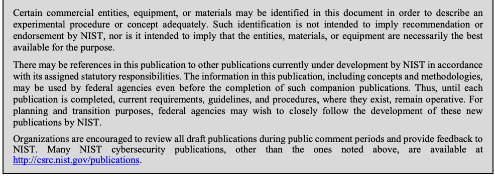
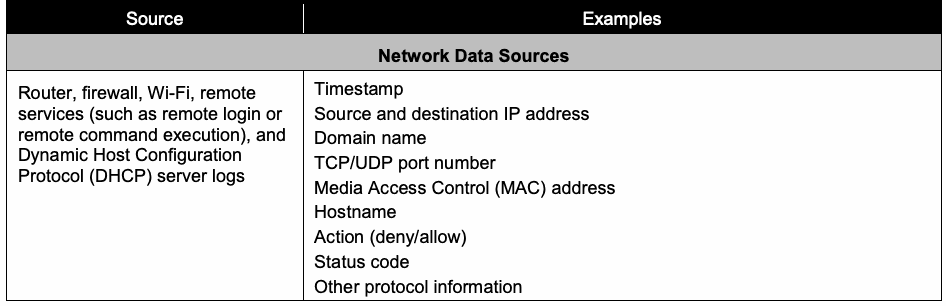
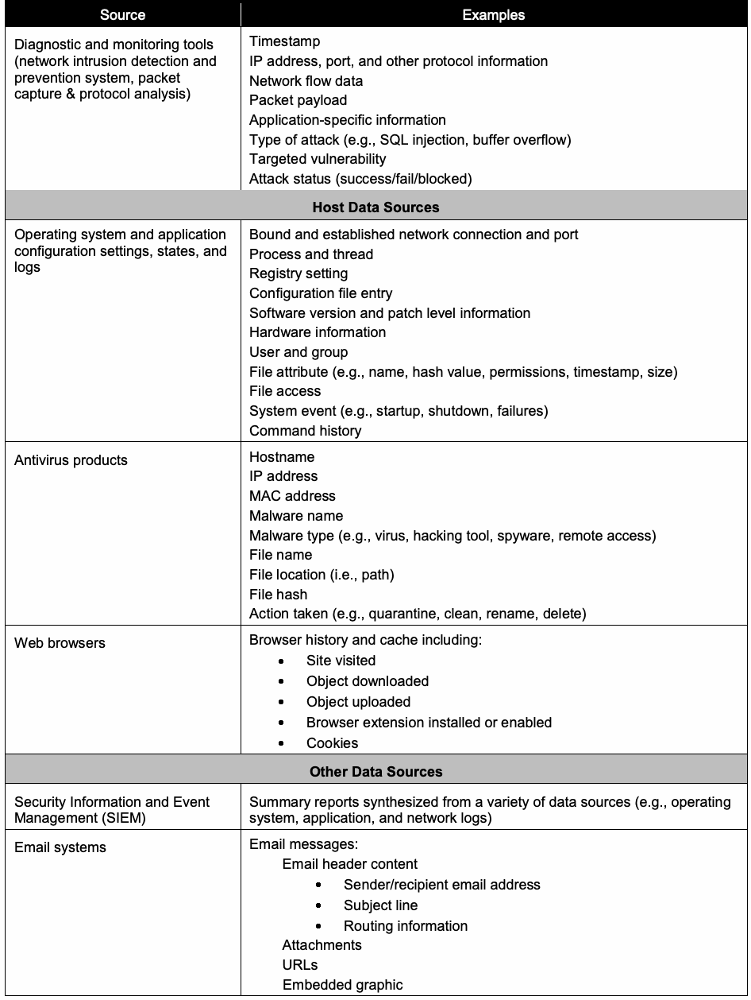
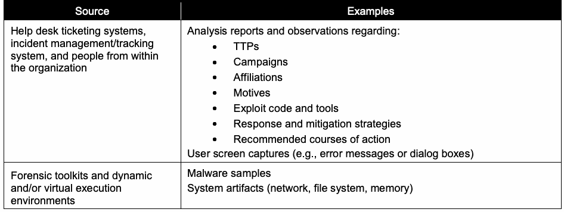
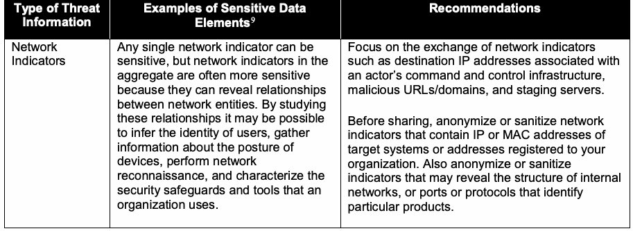
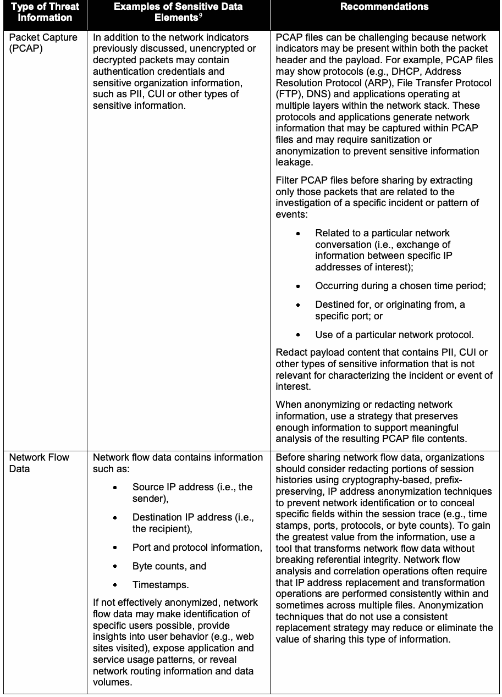
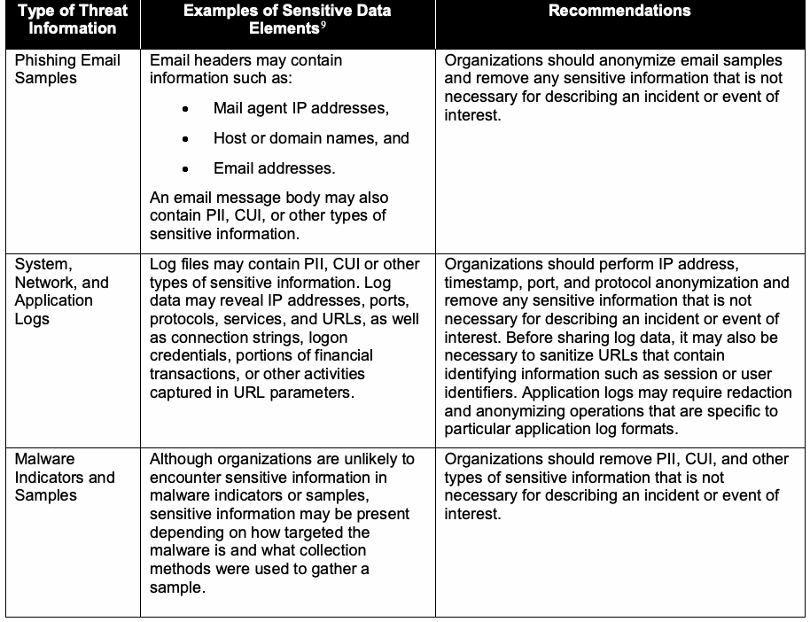
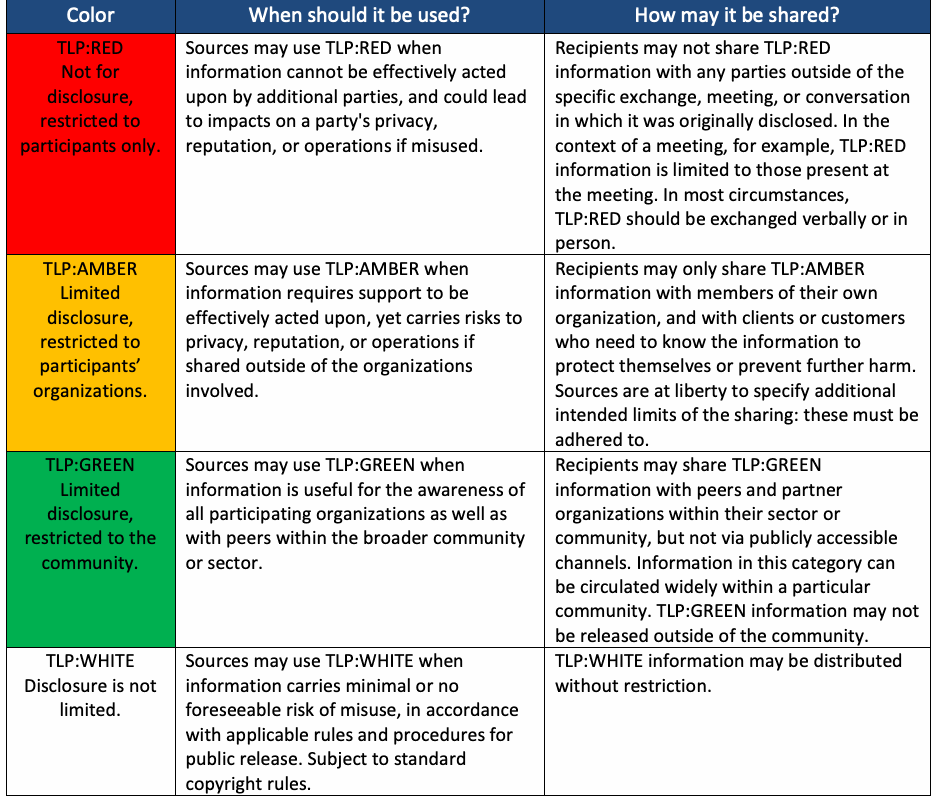

NIST Special Publication · PDF 原文抽出
Guide to Cyber Threat Information Sharing
サイバー脅威情報共有ガイド
NIST SP 800-150（Guide to Cyber Threat Information Sharing）の英文と日本語訳を段落ごとに並べた閲覧用ページです。組織がサイバー脅威情報の共有関係を構築・運用し、共有情報をサイバーセキュリティ活動に活用するための指針を示します。 翻訳は有志による非公式のもので、NIST および米国商務省が作成・承認・推奨したものではありません。要件の確認にはNIST の正式版 PDFを参照してください。
PDF から抽出した原文は原本との照合待ちです。
本文の数式はLaTeXの構造からKaTeXで表示しています。
NIST Special Publication 800-150
NIST特別刊行物800-150
Guide to Cyber Threat Information Sharing
サイバー脅威情報共有ガイド
Chris Johnson Lee Badger David Waltermire Julie Snyder Clem Skorupka
Chris Johnson、Lee Badger、David Waltermire、Julie Snyder、Clem Skorupka
This publication is available free of charge from: http://dx.doi.org/10.6028/NIST.SP.800-150
本刊行物は、以下から無料で入手できる：http://dx.doi.org/10.6028/NIST.SP.800-150
C O M P U T E R S E C U R I T Y
コンピュータセキュリティ
［NIST のロゴ。公的な標章のため、この非公式サイトには掲載していない。原本 PDF を参照。］
NIST Special Publication 800-150
NIST特別刊行物800-150
Guide to Cyber Threat Information Sharing
サイバー脅威情報共有ガイド
Chris Johnson Lee Badger David Waltermire
Chris Johnson、Lee Badger、David Waltermire
Computer Security Division Information Technology Laboratory
コンピュータセキュリティ部門、情報技術研究所
Julie Snyder Clem Skorupka The MITRE Corporation
Julie Snyder、Clem Skorupka、MITRE Corporation
This publication is available free of charge from: http://dx.doi.org/10.6028/NIST.SP.800-150
本刊行物は、以下から無料で入手できる：http://dx.doi.org/10.6028/NIST.SP.800-150
October 2016
2016年10月
U.S. Department of Commerce Penny Pritzker, Secretary
米国商務省、Penny Pritzker長官
National Institute of Standards and Technology
米国国立標準技術研究所
Willie May, Under Secretary of Commerce for Standards and Technology and Director
Willie May、標準・技術担当商務次官兼所長
Authority
権限
This publication has been developed by NIST in accordance with its statutory responsibilities under the Federal Information Security Modernization Act (FISMA) of 2014, 44 U.S.C. § 3551 et seq., Public Law (P.L.) 113-283. NIST is responsible for developing information security standards and guidelines, including minimum requirements for federal information systems, but such standards and guidelines shall not apply to national security systems without the express approval of appropriate federal officials exercising policy authority over such systems. This guideline is consistent with the requirements of the Office of Management and Budget (OMB) Circular A-130.
本刊行物は、2014年連邦情報セキュリティ近代化法（FISMA）、合衆国法典第44編第3551条以降、公法（P.L.）113-283に基づく法定責務に従い、NISTが作成した。NISTは、連邦情報システムの最低要件を含む情報セキュリティ標準およびガイドラインを策定する責任を負う。ただし、国家安全保障システムに対する政策権限を行使する適切な連邦政府職員の明示的な承認がない限り、これらの標準およびガイドラインを当該システムに適用してはならない。本ガイドラインは、行政管理予算局（OMB）通達A-130の要件と整合している。
Nothing in this publication should be taken to contradict the standards and guidelines made mandatory and binding on federal agencies by the Secretary of Commerce under statutory authority. Nor should these guidelines be interpreted as altering or superseding the existing authorities of the Secretary of Commerce, Director of the OMB, or any other federal official. This publication may be used by nongovernmental organizations on a voluntary basis and is not subject to copyright in the United States. Attribution would, however, be appreciated by NIST.
本刊行物のいかなる内容も、法定権限に基づいて商務長官が連邦政府機関に対して義務的かつ拘束力のあるものとした標準およびガイドラインに矛盾するものと解釈すべきではない。また、本ガイドラインを、商務長官、OMB長官、その他の連邦政府職員が有する既存の権限を変更する、またはそれに取って代わるものと解釈すべきではない。本刊行物は、非政府組織が任意で利用でき、米国内では著作権の対象ではない。ただし、出典を明記していただければNISTとして幸いである。
National Institute of Standards and Technology Special Publication 800-150 Natl. Inst. Stand. Technol. Spec. Publ. 800-150, 35 pages (October 2016) CODEN: NSPUE2
米国国立標準技術研究所 特別刊行物800-150 Natl. Inst. Stand. Technol. Spec. Publ. 800-150、35ページ（2016年10月） CODEN: NSPUE2
This publication is available free of charge from: http://dx.doi.org/10.6028/NIST.SP.800-150
本刊行物は、以下から無料で入手できる：http://dx.doi.org/10.6028/NIST.SP.800-150
Certain commercial entities, equipment, or materials may be identified in this document in order to describe an experimental procedure or concept adequately. Such identification is not intended to imply recommendation or endorsement by NIST, nor is it intended to imply that the entities, materials, or equipment are necessarily the best available for the purpose. There may be references in this publication to other publications currently under development by NIST in accordance with its assigned statutory responsibilities. The information in this publication, including concepts and methodologies, may be used by federal agencies even before the completion of such companion publications. Thus, until each publication is completed, current requirements, guidelines, and procedures, where they exist, remain operative. For planning and transition purposes, federal agencies may wish to closely follow the development of these new publications by NIST. Organizations are encouraged to review all draft publications during public comment periods and provide feedback to NIST. Many NIST cybersecurity publications, other than the ones noted above, are available at http://csrc.nist.gov/publications.
原本PDFの抜粋画像

実験手順や概念を適切に説明するため、特定の商業組織、機器または材料を本書で特定することがある。これらの特定は、NISTによる推奨または承認を意味するものではなく、当該組織、材料または機器が目的に照らして必ずしも最良のものであることを意味するものでもない。本刊行物では、NISTが法定責務に基づいて現在策定中の他の刊行物を参照している場合がある。連邦政府機関は、関連する刊行物が完成する前でも、本刊行物に記載される情報（概念や方法論を含む）を利用できる。したがって、各刊行物が完成するまでは、現行の要件、ガイドラインおよび手順が存在する場合、それらは引き続き有効である。計画および移行のため、連邦政府機関はNISTによるこれら新刊行物の策定状況を注意深く確認するとよい。組織には、公開コメント期間中にすべての草案を確認し、NISTに意見を提出することを推奨する。前述の刊行物を除く多くのNISTサイバーセキュリティ刊行物は、http://csrc.nist.gov/publications から入手できる。
Comments on this publication may be submitted to: National Institute of Standards and Technology Attn: Computer Security Division, Information Technology Laboratory 100 Bureau Drive (Mail Stop 8930) Gaithersburg, MD 20899-8930 Email: sp800-150comments@nist.gov All comments are subject to release under the Freedom of Information Act (FOIA).
本刊行物へのコメント送付先：米国国立標準技術研究所、情報技術研究所コンピュータセキュリティ部門宛、100 Bureau Drive (Mail Stop 8930)、メリーランド州ゲイザースバーグ 20899-8930。メール：sp800-150comments@nist.gov。すべてのコメントは、情報公開法（FOIA）に基づき公開される場合がある。
Reports on Computer Systems Technology
コンピュータシステム技術に関する報告書
The Information Technology Laboratory (ITL) at the National Institute of Standards and Technology (NIST) promotes the U.S. economy and public welfare by providing technical leadership for the Nation’s measurement and standards infrastructure. ITL develops tests, test methods, reference data, proof of concept implementations, and technical analyses to advance the development and productive use of information technology. ITL’s responsibilities include the development of management, administrative, technical, and physical standards and guidelines for the cost-effective security and privacy of other than national security-related information in federal information systems. The Special Publication 800-series reports on ITL’s research, guidelines, and outreach efforts in information system security, and its collaborative activities with industry, government, and academic organizations.
米国国立標準技術研究所（NIST）の情報技術研究所（ITL）は、国の計測・標準基盤に技術的リーダーシップを発揮し、米国経済と公共の福祉を促進している。ITLは、情報技術の発展と生産的な利用を進めるため、試験、試験方法、参照データ、概念実証の実装、技術分析を開発する。ITLは、連邦情報システムにおける国家安全保障関連以外の情報のセキュリティとプライバシーを費用対効果高く確保するため、管理的、運用管理上、技術的および物理的な標準とガイドラインを策定する責任を担う。特別刊行物800シリーズは、情報システムセキュリティに関するITLの研究、ガイドライン、普及活動、および産業界、政府、学術機関との協力活動を報告する。
Abstract
概要
Cyber threat information is any information that can help an organization identify, assess, monitor, and respond to cyber threats. Cyber threat information includes indicators of compromise; tactics, techniques, and procedures used by threat actors; suggested actions to detect, contain, or prevent attacks; and the findings from the analyses of incidents. Organizations that share cyber threat information can improve their own security postures as well as those of other organizations. This publication provides guidelines for establishing and participating in cyber threat information sharing relationships. This guidance helps organizations establish information sharing goals, identify cyber threat information sources, scope information sharing activities, develop rules that control the publication and distribution of threat information, engage with existing sharing communities, and make effective use of threat information in support of the organization’s overall cybersecurity practices.
サイバー脅威情報とは、組織がサイバー脅威を識別、評価、監視し、対応するのに役立ち得るあらゆる情報である。サイバー脅威情報には、侵害指標、脅威アクターが用いる戦術・技法・手順、攻撃を検知、封じ込めまたは防止するための推奨措置、インシデント分析の結果が含まれる。サイバー脅威情報を共有する組織は、自組織および他組織のセキュリティ態勢を改善できる。本刊行物は、サイバー脅威情報の共有関係を構築し、そこに参加するためのガイドラインを示す。このガイダンスは、組織が情報共有の目標を定め、サイバー脅威情報の情報源を特定し、情報共有活動の範囲を設定し、脅威情報の公開と配布を管理する規則を策定し、既存の共有コミュニティに関与し、組織全体のサイバーセキュリティ活動を支えるために脅威情報を効果的に活用することを支援する。
Keywords
キーワード
cyber threat; cyber threat information sharing; indicators; information security; information sharing
サイバー脅威；サイバー脅威情報共有；指標；情報セキュリティ；情報共有
Acknowledgments
謝辞
The authors, Chris Johnson, Lee Badger, and David Waltermire of the National Institute of Standards and Technology (NIST), and Julie Snyder and Clem Skorupka of The MITRE Corporation, wish to thank their colleagues who contributed to this publication, including Tom Millar and Rich Struse of the Department of Homeland Security (DHS); Karen Quigg, Richard Murad, Carlos Blazquez, and Jon Baker of The MITRE Corporation; Murugiah Souppaya and Melanie Cook of NIST; Ryan Meeuf, of the Software Engineering Institute, Carnegie Mellon University; George Saylor, Greg Witte, and Matt Smith of G2 Inc.; Karen Scarfone of Scarfone Cybersecurity; Chris Bean of the National Security Agency (NSA); Eric Burger of the Georgetown Center for Secure Communications, Georgetown University; Joe Drissel of Cyber Engineering Services Inc.; Tony Sager of the Center for Internet Security; Kent Landfield of Intel Security; Bruce Potter of KEYW Inc.; Jeff Carpenter of Dell SecureWorks; Ben Miller of the North American Electric Reliability Corporation (NERC); Anton Chuvakin of Gartner, Inc.; Johannes Ullrich of the SANS Technology Institute; Patrick Dempsey, Defense Industrial Base Collaborative Information Sharing Environment (DCISE); Matthew Schuster, Mass Insight; Garrett Schubert of EMC; James Caulfield of the Federal Reserve; Bob Guay of Biogen; and Chris Sullivan of Courion.
著者である米国国立標準技術研究所（NIST）のChris Johnson、Lee Badger、David Waltermire、およびMITRE CorporationのJulie Snyder、Clem Skorupkaは、本刊行物に貢献した同僚に謝意を表する。協力者には、国土安全保障省（DHS）のTom Millar、Rich Struse、MITRE CorporationのKaren Quigg、Richard Murad、Carlos Blazquez、Jon Baker、NISTのMurugiah Souppaya、Melanie Cook、カーネギーメロン大学ソフトウェア工学研究所のRyan Meeuf、G2 Inc.のGeorge Saylor、Greg Witte、Matt Smith、Scarfone CybersecurityのKaren Scarfone、国家安全保障局（NSA）のChris Bean、ジョージタウン大学セキュアコミュニケーションセンターのEric Burger、Cyber Engineering Services Inc.のJoe Drissel、Center for Internet SecurityのTony Sager、Intel SecurityのKent Landfield、KEYW Inc.のBruce Potter、Dell SecureWorksのJeff Carpenter、北米電力信頼性協議会（NERC）のBen Miller、Gartner, Inc.のAnton Chuvakin、SANS Technology InstituteのJohannes Ullrich、Defense Industrial Base Collaborative Information Sharing Environment（DCISE）のPatrick Dempsey、Mass InsightのMatthew Schuster、EMCのGarrett Schubert、連邦準備制度のJames Caulfield、BiogenのBob Guay、CourionのChris Sullivanが含まれる。
Trademark Information
商標情報
All registered trademarks or trademarks belong to their respective organizations.
登録商標および商標はすべて、それぞれの組織に帰属する。
Executive Summary
要約
Cyber attacks have increased in frequency and sophistication, presenting significant challenges for organizations that must defend their data and systems from capable threat actors. These actors range from individual, autonomous attackers to well-resourced groups operating in a coordinated manner as part of a criminal enterprise or on behalf of a nation-state. Threat actors can be persistent, motivated, and agile, and they use a variety of tactics, techniques, and procedures (TTPs) to compromise systems, disrupt services, commit financial fraud, and expose or steal intellectual property and other sensitive information. Given the risks these threats present, it is increasingly important that organizations share cyber threat information and use it to improve their security posture.
サイバー攻撃は頻度と高度化の両面で増加し、能力の高い脅威アクターからデータとシステムを守らなければならない組織に大きな課題をもたらしている。脅威アクターは、単独で活動する個人から、犯罪組織の一員として、または国家のために連携して行動する豊富な資源を持つ集団まで幅広い。脅威アクターは持続的で、強い動機を持ち、機敏に活動する場合があり、さまざまな戦術・技法・手順（TTP）を使って、システムを侵害し、サービスを妨害し、金融詐欺を行い、知的財産その他の機微情報を暴露または窃取する。こうした脅威がもたらすリスクを踏まえると、組織がサイバー脅威情報を共有し、それを用いてセキュリティ態勢を改善することがますます重要になっている。
Cyber threat information is any information that can help an organization identify, assess, monitor, and respond to cyber threats. Examples of cyber threat information include indicators (system artifacts or observables associated with an attack), TTPs, security alerts, threat intelligence reports, and recommended security tool configurations. Most organizations already produce multiple types of cyber threat information that are available to share internally as part of their information technology and security operations efforts.
サイバー脅威情報とは、組織がサイバー脅威を識別、評価、監視し、対応するのに役立ち得るあらゆる情報である。サイバー脅威情報の例として、指標（攻撃に関連するシステム上の痕跡または観測可能な事象）、TTP、セキュリティ警告、脅威インテリジェンス報告書、推奨されるセキュリティツールの構成がある。ほとんどの組織は、情報技術およびセキュリティ運用活動の一環として、組織内で共有可能な複数種類のサイバー脅威情報をすでに作成している。
By exchanging cyber threat information within a sharing community, organizations can leverage the collective knowledge, experience, and capabilities of that sharing community to gain a more complete understanding of the threats the organization may face. Using this knowledge, an organization can make threat-informed decisions regarding defensive capabilities, threat detection techniques, and mitigation strategies. By correlating and analyzing cyber threat information from multiple sources, an organization can also enrich existing information and make it more actionable. This enrichment may be achieved by independently confirming the observations of other community members, and by improving the overall quality of the threat information through the reduction of ambiguity and errors. Organizations that receive threat information and subsequently use this information to remediate a threat confer a degree of protection to other organizations by impeding the threat’s ability to spread. Additionally, sharing of cyber threat information allows organizations to better detect campaigns that target particular industry sectors, business entities, or institutions.
共有コミュニティ内でサイバー脅威情報を交換することで、組織はその共有コミュニティの集合的な知識、経験、能力を活用し、自組織が直面する可能性のある脅威をより完全に把握できる。この知識を用いることで、組織は防御能力、脅威検知技法、緩和戦略について、脅威情報に基づく意思決定を行える。また、複数の情報源から得たサイバー脅威情報を相関付けて分析することで、既存の情報を充実させ、より実用的にすることもできる。この充実は、他のコミュニティメンバーの観測結果を独立に確認すること、および曖昧さや誤りを減らして脅威情報全体の品質を高めることによって達成できる。脅威情報を受け取り、その後その情報を用いて脅威を是正する組織は、脅威の拡散能力を妨げることで、他の組織にも一定の保護をもたらす。さらに、サイバー脅威情報を共有することで、組織は特定の産業分野、事業体、または機関を標的とするキャンペーンをより適切に検知できるようになる。
This publication assists organizations in establishing and participating in cyber threat information sharing relationships. The publication describes the benefits and challenges of sharing, clarifies the importance of trust, and introduces specific data handling considerations. The goal of the publication is to provide guidelines that improve cybersecurity operations and risk management activities through safe and effective information sharing practices, and that help organizations plan, implement, and maintain information sharing.
本刊行物は、組織がサイバー脅威情報の共有関係を構築し、そこに参加することを支援する。本刊行物は、共有の利点と課題を説明し、信頼の重要性を明確にするとともに、データの取扱いに関する具体的な考慮事項を紹介する。本刊行物の目的は、安全かつ効果的な情報共有の実践を通じてサイバーセキュリティ運用とリスク管理活動を改善し、組織による情報共有の計画、実施、維持を支援するガイドラインを示すことである。
NIST encourages greater sharing of cyber threat information among organizations, both in acquiring threat information from other organizations and in providing internally-generated threat information to other organizations. Implementing the following recommendations enables organizations to make more efficient and effective use of information sharing capabilities.
NISTは、他組織からの脅威情報の取得と、組織内で生成した脅威情報の他組織への提供の両面において、組織間でサイバー脅威情報を一層共有することを奨励する。以下の推奨事項を実施することで、組織は情報共有能力をより効率的かつ効果的に活用できる。
Establish information sharing goals and objectives that support business processes and security policies.
業務プロセスとセキュリティ方針を支援する情報共有の目標と目的を定める。
An organization’s information sharing goals and objectives should advance its overall cybersecurity strategy and help an organization more effectively manage cyber-related risk. An organization should use the combined knowledge and experience of its own personnel and others, such as members of cyber threat information sharing organizations, to share threat information while operating per its security, privacy, regulatory, and legal compliance requirements.
組織の情報共有の目標と目的は、組織全体のサイバーセキュリティ戦略を前進させ、サイバー関連リスクをより効果的に管理できるよう支援すべきである。組織は、自組織の職員や、サイバー脅威情報共有組織のメンバーなど他者の知識と経験を組み合わせて活用し、セキュリティ、プライバシー、規制、法令遵守の要件に従って業務を行いながら脅威情報を共有すべきである。
Identify existing internal sources of cyber threat information.
サイバー脅威情報に関する既存の内部情報源を特定する。
Organizations should identify tools, sensors, and repositories that collect, produce, or store cyber threat information, threat analytics platforms, and delivery mechanisms that support the exchange of cyber threat information. As internal cyber threat information sources and capabilities are identified, organizations should determine how information from these sources currently support cybersecurity and risk management activities. Organizations should also document observed knowledge gaps and consider acquiring additional threat information from other (possibly external) sources or through the deployment of other tools or sensors. Finally, organizations should identify threat information that is available and suitable for sharing with outside parties.
組織は、サイバー脅威情報を収集、生成、または保存するツール、センサー、リポジトリ、脅威分析プラットフォーム、およびサイバー脅威情報の交換を支援する配信機構を特定すべきである。内部のサイバー脅威情報源と能力を特定したら、各情報源からの情報が現在、サイバーセキュリティとリスク管理活動をどのように支援しているかを明らかにすべきである。また、観測された知識の不足を記録し、他の情報源（外部の情報源である可能性もある）から、または他のツールやセンサーを導入して、追加の脅威情報を取得することを検討すべきである。最後に、外部組織と共有可能で、共有に適した脅威情報を特定すべきである。
Specify the scope of information sharing activities.
情報共有活動の範囲を定める。
The breadth of an organization’s information sharing activities should be consistent with its resources, abilities, and objectives. Information sharing efforts should focus on activities that provide the greatest value to an organization and its sharing partners. The scoping activity should identify types of information that an organization’s key stakeholders authorize for sharing, the circumstances under which sharing of this information is permitted, and those with whom the information can and should be shared.
組織の情報共有活動の範囲は、その組織のリソース、能力、目的に見合ったものとすべきである。情報共有の取り組みでは、組織と共有パートナーに最大の価値をもたらす活動に重点を置くべきである。範囲を定める活動では、組織の主要な利害関係者が共有を承認する情報の種類、その情報の共有が認められる状況、ならびにその情報を共有でき、かつ共有すべき相手を特定すべきである。
Establish information sharing rules.
情報共有の規則を定める。
Sharing rules are intended to control the publication and distribution of threat information, and consequently help to prevent the dissemination of information that, if improperly disclosed, may have adverse consequences for an organization, its customers, or its business partners. Information sharing rules should take into consideration the trustworthiness of the recipient, the sensitivity of the shared information, and the potential impact of sharing (or not sharing) specific types of information.
共有規則は、脅威情報の公開と配布を管理することを目的とし、不適切に開示された場合に組織、顧客、または取引先に悪影響を及ぼし得る情報の流通を防ぐのに役立つ。情報共有の規則では、受領者の信頼性、共有情報の機微性、および特定の種類の情報を共有する場合と共有しない場合の潜在的な影響を考慮すべきである。
Join and participate in information sharing efforts.
情報共有の取り組みに加入し、参加する。
An organization should identify and participate in sharing activities that complement its existing threat information capabilities. An organization may need to participate in multiple information sharing forums to meet its operational needs. Organizations should consider public and private sharing communities, government repositories, commercial cyber threat information feeds, and open sources such as public websites, blogs, and data feeds.
組織は、既存の脅威情報能力を補完する共有活動を特定し、そこに参加すべきである。業務上のニーズを満たすため、組織は複数の情報共有フォーラムへの参加が必要となる場合がある。組織は、公開および非公開の共有コミュニティ、政府のリポジトリ、商用サイバー脅威情報フィード、および公開ウェブサイト、ブログ、データフィードなどの公開情報源を検討すべきである。
Actively seek to enrich indicators by providing additional context, corrections, or suggested improvements.
追加の文脈、訂正、または改善案を提供して、指標の充実に積極的に取り組む。
When possible, organizations should increase the usefulness and effectiveness of threat information by producing metadata for each indicator that is generated. Such metadata can provide context regarding the indicator by describing the intended use of the indicator, how it is to be interpreted, and how it relates to other indicators. Additionally, sharing processes should include mechanisms for publishing indicators, updating indicators and associated metadata, and retracting submissions that are incorrect or perhaps inadvertently shared. Such feedback plays an important role in the enrichment, maturation, and quality of the indicators shared within a community.
可能な場合、組織は生成した各指標についてメタデータを作成し、脅威情報の有用性と効果を高めるべきである。このようなメタデータは、指標の意図された用途、解釈方法、他の指標との関係を説明し、指標の文脈を示すことができる。さらに、共有プロセスには、指標の公開、指標と関連メタデータの更新、誤りがある、または誤って共有された可能性のある投稿の撤回を行う仕組みを含めるべきである。このようなフィードバックは、コミュニティ内で共有される指標の充実、成熟、品質向上に重要な役割を果たす。
Use secure, automated workflows to publish, consume, analyze, and act upon cyber threat information.
サイバー脅威情報の公開、取り込み、分析、および対応には、安全で自動化されたワークフローを使用する。
The use of standardized data formats and transport protocols to share cyber threat information makes it easier to automate threat information processing. The use of automation enables cyber threat information to be rapidly shared, transformed, enriched, analyzed, and acted upon with less need for manual intervention.
サイバー脅威情報の共有に標準化されたデータ形式と転送プロトコルを使用すると、脅威情報処理を自動化しやすくなる。自動化により、手作業への依存を減らしながら、サイバー脅威情報を迅速に共有、変換、充実、分析し、それに基づいて対応できる。
Proactively establish cyber threat sharing agreements.
サイバー脅威情報の共有合意を事前に確立する。
Rather than attempting to establish sharing agreements during an active cyber incident, organizations should plan ahead and have agreements in place before incidents occur. Such advanced planning helps ensure that participating organizations establish trusted relationships and understand their roles, responsibilities, and information handling requirements.
サイバーインシデントの発生中に共有合意の締結を試みるのではなく、組織は事前に計画し、インシデント発生前に合意を整えておくべきである。このような事前計画により、参加組織は信頼関係を築き、それぞれの役割、責任、情報取扱要件を理解できる。
Protect the security and privacy of sensitive information.
機微情報のセキュリティとプライバシーを保護する。
Sensitive information such as controlled unclassified information (CUI) [16] and personally identifiable information (PII) may be encountered when handling cyber threat information. The improper disclosure of such information could cause financial loss; violate laws, regulations, and contracts; be cause for legal action; or damage an organization’s or individual’s reputation. Accordingly, organizations should implement the necessary security and privacy controls and handling procedures to protect this information from unauthorized disclosure or modification.
管理対象非機密情報（CUI）[16]や個人識別情報（PII）などの機微情報は、サイバー脅威情報を取り扱う際に遭遇する可能性がある。このような情報を不適切に開示すると、金銭的損失を招く、法律、規制、契約に違反する、法的措置の原因となる、または組織や個人の評判を損なうおそれがある。したがって、組織は不正な開示や改変から情報を保護するため、必要なセキュリティおよびプライバシー管理策と取扱手順を実施すべきである。
Provide ongoing support for information sharing activities.
情報共有活動を継続的に支援する。
Each organization should establish an information sharing plan that provides for ongoing infrastructure maintenance and user support. The plan should address the collection and analysis of threat information from both internal and external sources and the use of this information in the development and deployment of protective measures. A sustainable approach is necessary to ensure that resources are available for the ongoing collection, storage, analysis, and dissemination of cyber threat information.
各組織は、インフラストラクチャの継続的な保守と利用者支援を定めた情報共有計画を策定すべきである。この計画では、内部および外部の情報源から脅威情報を収集・分析することと、その情報を防護策の策定・展開に利用することを扱うべきである。サイバー脅威情報の継続的な収集、保存、分析、配布に必要なリソースを確保するには、持続可能な方法が必要である。
Table of Contents
目次
Executive Summary.................................................................................................................iii
エグゼクティブサマリー.................................................................................................................iii
1. Introduction — 1
1. はじめに — 1
1.1 Purpose and Scope — 1
1.1 目的と適用範囲 — 1
1.2 Audience — 1
1.2 対象読者 — 1
1.3 Document Structure — 1
1.3 文書の構成 — 1
2. Basics of Cyber Threat Information Sharing — 2
2. サイバー脅威情報共有の基礎 — 2
2.1 Threat Information Types — 2
2.1 脅威情報の種類 — 2
2.2 Benefits of Information Sharing — 3
2.2 情報共有の利点 — 3
2.3 Challenges to Information Sharing — 4
2.3 情報共有の課題 — 4
3. Establishing Sharing Relationships — 6
3. 共有関係の構築 — 6
3.1 Define Information Sharing Goals and Objectives — 6
3.1 情報共有の目標と目的の定義 — 6
3.2 Identify Internal Sources of Cyber Threat Information — 6
3.2 サイバー脅威情報の内部情報源の特定 — 6
3.3 Define the Scope of Information Sharing Activities — 9
3.3 情報共有活動の範囲の定義 — 9
3.4 Establish Information Sharing Rules — 9
3.4 情報共有規則の確立 — 9
3.4.1 Information Sensitivity and Privacy — 11
3.4.1 情報の機微性とプライバシー — 11
3.4.2 Sharing Designations — 14
3.4.2 共有区分 — 14
3.4.3 Cyber Threat Information Sharing and Tracking Procedures — 16
3.4.3 サイバー脅威情報の共有・追跡手順 — 16
3.5 Join a Sharing Community — 16
3.5 共有コミュニティへの参加 — 16
3.6 Plan to Provide Ongoing Support for Information Sharing Activities — 18
3.6 情報共有活動を継続的に支援するための計画 — 18
4. Participating in Sharing Relationships — 20
4. 共有関係への参加 — 20
4.1 Engage in Ongoing Communication — 20
4.1 継続的なコミュニケーション — 20
4.2 Consume and Respond to Security Alerts — 21
4.2 セキュリティ警告の取り込みと対応 — 21
4.3 Consume and Use Indicators — 21
4.3 指標の取り込みと利用 — 21
4.4 Organize and Store Cyber Threat Information — 23
4.4 サイバー脅威情報の整理と保存 — 23
4.5 Produce and Publish Indicators — 25
4.5 指標の作成と公開 — 25
4.5.1 Indicator Enrichment — 25
4.5.1 指標の拡充 — 25
4.5.2 Standard Data Formats — 25
4.5.2 標準データ形式 — 25
4.5.3 Protection of Sensitive Data — 26
4.5.3 機微データの保護 — 26
List of Appendices
付録一覧
Appendix A— Cyber Threat Information Sharing Scenarios — 27
付録A— サイバー脅威情報共有のシナリオ — 27
Appendix B— Glossary — 30
付録B— 用語集 — 30
Appendix C— Acronyms — 32
付録C— 頭字語 — 32
Appendix D— References — 34
付録D— 参考文献 — 34
List of Tables
表一覧
Table 3-1: Selected Internal Information Sources — 7
表3-1: 選定した内部情報源 — 7
Table 3-2: Handling Recommendations for Selected Types of Sensitive Data — 12
表3-2: 選定した種類の機微データの取扱いに関する推奨事項 — 12
Table 3-3: Traffic Light Protocol, Version 1.0 — 15
表3-3: トラフィックライトプロトコル、バージョン1.0 — 15
1. Introduction
1. はじめに
1.1 Purpose and Scope
1.1 目的と適用範囲
This publication provides guidance to help organizations exchange cyber threat information. The guidance addresses sharing of cyber threat information within an organization, consuming and using cyber threat information received from external sources, and producing cyber threat information that can be shared with other organizations. The document also presents specific considerations for participation in information sharing communities.
本書は、組織によるサイバー脅威情報の交換を支援する指針を示す。この指針では、組織内でのサイバー脅威情報の共有、外部情報源から受け取ったサイバー脅威情報の取り込みと利用、および他組織と共有できるサイバー脅威情報の作成を扱う。また、情報共有コミュニティへの参加に関する具体的な考慮事項も示す。
This publication expands upon the information sharing concepts introduced in Section 4, Coordination and Information Sharing, of NIST Special Publication (SP) 800-61[1].
本書は、NIST特別刊行物（SP）800-61[1]の第4節「調整と情報共有」で紹介された情報共有の概念を発展させたものである。
1.2 Audience
1.2 対象読者
This publication is intended for computer security incident response teams (CSIRTs), system and network administrators, cybersecurity specialists, privacy officers, technical support staff, chief information security officers (CISOs), chief information officers (CIOs), computer security program managers, and others who are key stakeholders in cyber threat information sharing activities.
本刊行物は、コンピューターセキュリティインシデント対応チーム（CSIRT）、システムおよびネットワーク管理者、サイバーセキュリティ専門家、プライバシー担当者、技術サポート職員、最高情報セキュリティ責任者（CISO）、最高情報責任者（CIO）、コンピューターセキュリティプログラム管理者、ならびにサイバー脅威情報共有活動の主要な利害関係者であるその他の者を対象とする。
Although this guidance is written primarily for federal agencies, it is intended to be applicable to a wide variety of governmental and non-governmental organizations.
本指針は主として連邦機関向けに作成されているが、幅広い政府機関および非政府組織に適用することを意図している。
1.3 Document Structure
1.3 文書の構成
The remainder of this document is organized into the following sections and appendices:
本書の残りの部分は、次の各節および付録で構成される。
•Section 2 introduces basic cyber threat information sharing concepts, describes the benefits of sharing information, and discusses the challenges faced by organizations as they implement sharing capabilities.
•第2節では、サイバー脅威情報共有の基本概念を紹介し、情報共有の利点を説明するとともに、組織が共有能力を実装する際に直面する課題を論じる。
•Section 3 provides guidelines on establishing sharing relationships with other organizations.
•第3節では、他の組織との共有関係を確立するための指針を示す。
•Section 4 discusses considerations for effectively participating in sharing relationships.
•第4節では、共有関係に効果的に参加するための考慮事項を論じる。
•Appendix A contains scenarios that show how organizations can enhance their network defenses by sharing cyber threat information and by leveraging the cyber experience and capabilities of their partners.
•付録Aでは、サイバー脅威情報を共有し、パートナーのサイバー分野での経験と能力を活用することにより、組織がネットワーク防御を強化する方法を示すシナリオを収録する。
•Appendix B contains a list of terms used in the document and their associated definitions.
•付録Bでは、本書で使用する用語とその定義を一覧にする。
•Appendix C provides a list of acronyms used in the document.
•付録Cでは、本書で使用する頭字語の一覧を示す。
•Appendix D identifies resources referenced in the document.
•付録Dでは、本書で参照する資料を特定する。
2. Basics of Cyber Threat Information Sharing
2. サイバー脅威情報共有の基礎
This section introduces basic cyber threat information sharing concepts including types of cyber threat information and common terminology. The section also examines potential uses for shared cyber threat information and explores the benefits and challenges of threat information sharing.
本節では、サイバー脅威情報の種類や一般的な用語を含む、サイバー脅威情報共有の基本概念を紹介する。また、共有されたサイバー脅威情報の潜在的な用途を検討し、脅威情報共有の利点と課題を探る。
2.1 Threat Information Types
2.1 脅威情報の種類
A cyber threat is “any circumstance or event with the potential to adversely impact organizational operations (including mission, functions, image, or reputation), organizational assets, individuals, other organizations, or the Nation through an information system via unauthorized access, destruction, disclosure, or modification of information, and/or denial of service.” [2] For brevity, this publication uses the term threat instead of “cyber threat”. The individuals and groups posing threats are known as “threat actors” or simply actors.
サイバー脅威とは、「情報システムを介した情報への不正アクセス、破壊、開示もしくは改変、および／またはサービス拒否により、組織の業務（使命、機能、イメージまたは評判を含む）、組織の資産、個人、他の組織、または国家に悪影響を及ぼす可能性のあるあらゆる状況または事象」である。[2] 簡潔にするため、本刊行物では「サイバー脅威」の代わりに「脅威」という用語を用いる。脅威をもたらす個人や集団は「脅威アクター」、または単にアクターと呼ばれる。
Threat information is any information related to a threat that might help an organization protect itself against a threat or detect the activities of an actor. Major types of threat information include the following:
脅威情報とは、脅威に関連する情報のうち、組織が脅威から自らを保護したり、アクターの活動を検知したりするのに役立つ可能性がある情報である。主な脅威情報の種類を以下に示す。
•Indicators are technical artifacts or observables1 that suggest an attack is imminent or is currently underway or that a compromise may have already occurred. Indicators can be used to detect and defend against potential threats. Examples of indicators include the Internet Protocol (IP) address of a suspected command and control server, a suspicious Domain Name System (DNS) domain name, a Uniform Resource Locator (URL) that references malicious content, a file hash for a malicious executable, or the subject line text of a malicious email message.
•指標とは、攻撃が差し迫っていること、もしくは現在進行中であること、または侵害がすでに発生した可能性があることを示唆する、技術的なアーティファクトまたは観測可能事象1である。指標は潜在的な脅威の検知と防御に利用できる。指標の例として、コマンド＆コントロールサーバーと疑われるサーバーのインターネットプロトコル（IP）アドレス、疑わしいドメインネームシステム（DNS）ドメイン名、悪意あるコンテンツを参照する統一資源位置指定子（URL）、悪意ある実行可能ファイルのファイルハッシュ、悪意ある電子メールメッセージの件名テキストなどがある。
•Tactics, techniques, and procedures (TTPs) describe the behavior of an actor. Tactics are high-level descriptions of behavior, techniques are detailed descriptions of behavior in the context of a tactic, and procedures are even lower-level, highly detailed descriptions in the context of a technique. TTPs could describe an actor’s tendency to use a specific malware variant, order of operations, attack tool, delivery mechanism (e.g., phishing or watering hole attack), or exploit.
•戦術、技法、手順（TTP）は、アクターの行動を記述する。戦術は行動の高レベルな説明、技法は戦術の文脈における行動の詳細な説明、手順は技法の文脈におけるさらに低レベルで非常に詳細な説明である。TTPは、アクターが特定のマルウェア亜種、操作の順序、攻撃ツール、配送メカニズム（例：フィッシングや水飲み場型攻撃）、またはエクスプロイトを用いる傾向を記述し得る。
•Security alerts, also known as advisories, bulletins, and vulnerability notes, are brief, usually human-readable, technical notifications regarding current vulnerabilities, exploits, and other security issues. Security alerts originate from sources such as the United States Computer Emergency Readiness Team (US-CERT), Information Sharing and Analysis Centers (ISACs), the National Vulnerability Database (NVD), Product Security Incident Response Teams (PSIRTs), commercial security service providers, and security researchers.
•セキュリティアラートは、勧告、速報、脆弱性ノートとも呼ばれ、現在の脆弱性、エクスプロイト、その他のセキュリティ問題に関する簡潔で、通常は人が読める技術的通知である。セキュリティアラートは、米国コンピューター緊急事態対策チーム（US-CERT）、情報共有分析センター（ISAC）、国家脆弱性データベース（NVD）、製品セキュリティインシデント対応チーム（PSIRT）、商用セキュリティサービスプロバイダー、セキュリティ研究者などから発信される。
•Threat intelligence reports are generally prose documents that describe TTPs, actors, types of systems and information being targeted, and other threat-related information that provides greater situational awareness to an organization. Threat intelligence is threat information that has been aggregated, transformed, analyzed, interpreted, or enriched to provide the necessary context for decision-making processes.
•脅威インテリジェンスレポートは一般に文章形式の文書であり、TTP、アクター、標的となるシステムや情報の種類、ならびに組織の状況認識を高めるその他の脅威関連情報を記述する。脅威インテリジェンスとは、意思決定に必要な文脈を提供するために集約、変換、分析、解釈、または拡充された脅威情報である。
•Tool configurations are recommendations for setting up and using tools (mechanisms) that support the automated collection, exchange, processing, analysis, and use of threat information. For example, tool configuration information could consist of instructions on how to install and use a rootkit
•ツール構成情報とは、脅威情報の自動収集、交換、処理、分析および利用を支援するツール（メカニズム）の設定と使用に関する推奨事項である。例えば、ルートキット
detection and removal utility, or how to create and customize intrusion detection signatures, router access control lists (ACLs), firewall rules, or web filter configuration files.
検出・除去ユーティリティのインストールと使用方法や、侵入検知シグネチャ、ルーターのアクセス制御リスト（ACL）、ファイアウォールルール、ウェブフィルター構成ファイルの作成とカスタマイズ方法の説明などが、ツール構成情報に含まれ得る。
Many organizations already produce and share threat information internally. For example, an organization’s security team may identify malicious files on a compromised system when responding to an incident and produce an associated set of indicators (e.g., file names, sizes, hash values). These indicators might then be shared with system administrators who configure security tools, such as host-based intrusion detection systems, to detect the presence of these indicators on other systems. Likewise, the security team may launch an email security awareness initiative in response to an observed rise in phishing attacks within the organization. These practices demonstrate information sharing within an organization.
多くの組織は、すでに脅威情報を内部で作成し、共有している。例えば、インシデント対応中に組織のセキュリティチームが侵害されたシステム上の悪意あるファイルを特定し、関連するインディケーターの一式（ファイル名、サイズ、ハッシュ値など）を作成することがある。これらのインディケーターは、ホスト型侵入検知システムなどのセキュリティツールを設定するシステム管理者と共有され、他のシステムに同じインディケーターが存在するかを検知するために使われることがある。同様に、組織内でフィッシング攻撃の増加が観測された際、セキュリティチームが電子メールセキュリティ意識向上の取り組みを開始することもある。これらは組織内での情報共有の例である。
The primary goal of this publication is to foster similar threat information sharing practices across organizational boundaries – both acquiring threat information from other organizations, and providing internally-generated threat information to other organizations.
本刊行物の主な目的は、他組織から脅威情報を取得すること、および内部で生成した脅威情報を他組織に提供することの両面で、組織の境界を越えた同様の脅威情報共有の実践を促進することである。
2.2 Benefits of Information Sharing
2.2 情報共有の利点
Threat information sharing provides access to threat information that might otherwise be unavailable to an organization. Using shared resources, organizations can enhance their security posture by leveraging the knowledge, experience, and capabilities of their partners in a proactive way. Allowing “one organization’s detection to become another’s prevention”2 is a powerful paradigm that can advance the overall security of organizations that actively share threat information.
脅威情報を共有することで、組織は、共有がなければ入手できない可能性のある脅威情報にアクセスできる。共有リソースを活用し、パートナーの知識、経験、能力を先を見越して利用することにより、組織はセキュリティ態勢を強化できる。「ある組織の検知を別の組織の予防にする」2という考え方は、脅威情報を積極的に共有する組織全体のセキュリティを前進させる強力な枠組みである。
An organization can use shared threat information in many ways. Some uses are operationally oriented, such as updating enterprise security controls for continuous monitoring with new indicators and configurations to detect the latest attacks and compromises. Threat information may also be used strategically, such as using shared threat information as inputs when planning major changes to an organization’s security architecture.
組織は共有された脅威情報をさまざまな方法で利用できる。例えば、最新の攻撃や侵害を検知するための新しいインディケーターや構成情報を用いて、継続的監視向けの企業セキュリティ管理策を更新するなど、運用面で活用できる。また、組織のセキュリティアーキテクチャに大きな変更を計画する際の入力情報として共有脅威情報を用いるなど、戦略面でも活用できる。
Threat information exchanged within communities organized around specific industries or sectors (or some other shared characteristic) can be particularly beneficial because the member organizations often face actors that use common TTPs that target the same types of systems and information. Cyber defense is most effective when organizations work together to deter and defend against well-organized, capable actors. Such collaboration helps to reduce risk and improve the organization’s security posture.
特定の業界や部門（または他の共通の特性）を軸に組織されたコミュニティ内で交換される脅威情報は、とりわけ有益である。参加組織は、同種のシステムや情報を標的とする共通のTTPを使うアクターに直面することが多いためである。組織が協力して、組織化され能力の高いアクターを抑止し、防御する場合に、サイバー防御は最も効果的となる。このような協力はリスクを低減し、組織のセキュリティ態勢を改善する。
Benefits of information sharing include:
情報共有の利点には、次のものがある。
•Shared Situational Awareness. Information sharing enables organizations to leverage the collective knowledge, experience, and analytic capabilities of their sharing partners within a community of interest, thereby enhancing the defensive capabilities of multiple organizations. Even a single contribution—a new indicator or observation about an actor—can increase the awareness and security of an entire community.
•状況認識の共有。情報共有により、組織は関心コミュニティ内の共有パートナーが持つ集合的な知識、経験、分析能力を活用でき、その結果、複数組織の防御能力を高められる。新しいインディケーターやアクターに関する観測など、たった一つの情報提供でも、コミュニティ全体の認識とセキュリティを向上させることがある。
•Improved Security Posture. By developing and sharing threat information, organizations gain a better understanding of the threat environment and can use threat information to inform their cybersecurity and risk management practices. Using shared information, organizations can identify affected platforms or systems, implement protective measures, enhance detection capabilities, and more effectively respond and recover from incidents based on observed changes in the threat environment. As organizations share information and subsequently mitigate threats, those
•セキュリティ態勢の向上。脅威情報を作成し共有することで、組織は脅威環境をよりよく理解し、脅威情報をサイバーセキュリティおよびリスク管理の実務に反映できる。共有情報を使えば、組織は、影響を受けるプラットフォームやシステムを特定し、保護対策を実施し、検知能力を高め、脅威環境について観測された変化に基づいてインシデントへの対応と復旧をより効果的に行える。組織が情報を共有し、その後脅威を緩和するにつれて、それらの
organizations can improve their overall cybersecurity posture, even providing a degree of protection to other organizations, including those who may not have responded to the threat information, by reducing the number of viable attack vectors for actors.
組織は、アクターにとって有効な攻撃経路の数を減らすことにより、自らのサイバーセキュリティ態勢全体を改善でき、さらには、その脅威情報に対応していない可能性のある組織を含む他の組織にも一定の保護をもたらす。
•Knowledge Maturation. When seemingly unrelated observations are shared and analyzed by organizations, those observations can be correlated with data collected by others. This enrichment process increases the value of information by enhancing existing indicators and by developing knowledge of actor TTPs that are associated with a specific incident, threat, or threat campaign. Correlation can also impart valuable insights into the relationships that exist between indicators.
•知識の成熟。無関係に見える観測結果を組織間で共有して分析すると、他者が収集したデータと関連付けられることがある。この拡充プロセスは、既存のインディケーターを強化し、特定のインシデント、脅威、または脅威キャンペーンに関連するアクターのTTPに関する知識を発展させることで、情報の価値を高める。相関分析は、インディケーター間に存在する関係についても有用な知見をもたらす。
•Greater Defensive Agility. Actors continually adapt their TTPs to try to evade detection, circumvent security controls, and exploit new vulnerabilities. Organizations that share information are often better informed about changing TTPs and the need to rapidly detect and respond to threats. This awareness helps increase their operational tempo and reduce the probability of successful attack. Such agility also creates economies of scale for network defenders while increasing actors’ costs by forcing them to develop new TTPs.
•防御の俊敏性向上。アクターは検知を逃れ、セキュリティ管理策を回避し、新たな脆弱性を悪用するため、TTPを絶えず適応させる。情報を共有する組織は、変化するTTPや脅威を迅速に検知・対応する必要性をより把握できることが多い。この認識は運用のテンポを高め、攻撃成功の確率を下げる。この俊敏性はネットワーク防御担当者に規模の経済ももたらす一方、アクターには新たなTTPの開発を強いることでコストを増加させる。
2.3 Challenges to Information Sharing
2.3 情報共有の課題
While sharing threat information clearly has benefits, certain challenges still remain. Some challenges that apply both to consuming and to producing threat information are:
脅威情報の共有には明らかな利点がある一方、依然としていくつかの課題が残っている。脅威情報の利用と作成の双方に当てはまる課題には、次のものがある。
•Establishing Trust. Trust relationships form the basis for information sharing, but require effort to establish and maintain. Ongoing communication through regular in-person meetings, phone calls, or social media can help accelerate the process of building trust.
•信頼の確立。信頼関係は情報共有の基礎となるが、その確立と維持には労力が必要である。定期的な対面会議、電話、ソーシャルメディアなどを通じた継続的なコミュニケーションは、信頼構築のプロセスを早めるのに役立つ。
•Achieving Interoperability and Automation. Standardized data formats and transport protocols are important building blocks for interoperability. The use of common formats and protocols enables automation and allows organizations, repositories, and tools to exchange threat information at machine speed. Adopting specific formats and protocols, however, can require significant time and resources, and the value of these investments can be substantially reduced if sharing partners require different formats or protocols. During the standards development process, early adopters need to accept the risk that it may be necessary to purchase new tools if significant changes to formats and protocols take place.
•相互運用性と自動化の実現。標準化されたデータ形式と転送プロトコルは、相互運用性を支える重要な基盤である。共通の形式とプロトコルを使うと、自動化が可能になり、組織、リポジトリ、ツール間で機械速度による脅威情報の交換ができる。ただし、特定の形式やプロトコルの採用には相当な時間と資源が必要となることがあり、共有パートナーが異なる形式やプロトコルを求めると、こうした投資の価値が大きく損なわれる可能性がある。標準の策定中は、形式やプロトコルに大幅な変更があれば新しいツールの購入が必要になるリスクを、早期採用者が受け入れる必要がある。
•Safeguarding Sensitive Information. Disclosure of sensitive information, such as controlled unclassified information (CUI) and personally identifiable information (PII) can result in financial loss, violation of sharing agreements, legal action, and loss of reputation. Sharing security and event information, such as security logs or scan results, could expose the protective or detective capabilities of the organization and result in threat shifting by the actor.3 The unauthorized disclosure of information may impede or disrupt an ongoing investigation, jeopardize information needed for future legal proceedings, or disrupt response actions such as botnet takedown operations. Organizations should apply handling designations to shared information and implement policies, procedures, and technical controls to actively manage the risks of disclosure of sensitive information.
•機微情報の保護。管理対象非機密情報（CUI）や個人識別情報（PII）などの機微情報が開示されると、金銭的損失、共有契約違反、法的措置、評判の失墜につながる可能性がある。セキュリティログやスキャン結果などのセキュリティ・イベント情報を共有すると、組織の保護能力や検知能力が露呈し、アクターによる脅威のシフトを招く可能性がある。3 情報の不正開示は、進行中の調査を妨害または中断させ、将来の法的手続きに必要な情報を危険にさらし、ボットネットの停止作戦などの対応措置を妨げる場合もある。組織は共有情報に取扱指定を適用し、機微情報の開示リスクを積極的に管理するための方針、手順、技術的管理策を実装すべきである。
•Protecting Classified Information. Information received from government sources may be marked as classified, making it difficult for an organization to use. Acquiring and maintaining the clearances needed for ongoing access to classified information sources is expensive and time-consuming for organizations. In addition, many organizations employ non-U.S. citizens who are not eligible to hold security clearances and are not permitted access to classified information. [3]
•機密情報の保護。政府の情報源から受領した情報には機密指定が付されている場合があり、組織による利用が難しくなる。機密情報源への継続的なアクセスに必要なクリアランスを取得・維持することは、組織にとって費用と時間がかかる。さらに、多くの組織は、セキュリティ・クリアランスを保有する資格がなく、機密情報へのアクセスを認められない米国籍以外の者を雇用している。[3]
•Enabling Information Consumption and Publication. Organizations that want to consume and publish threat information need to have the necessary infrastructure, tools, personnel, and training to do so. Information sharing initiatives should be carefully scoped, because high-frequency, high-volume information exchanges have the potential to overwhelm an organization’s processing capabilities. Organizations that are currently unable to support automated indicator exchange can explore other options such as the manual exchange of best practices or summary indicator information. As additional resources become available, an organization may decide to use automated tools and workflows to process and use threat information.
•情報の利用と公開を可能にする。脅威情報を利用・公開したい組織には、それを実現するために必要なインフラ、ツール、人員、訓練が必要である。高頻度かつ大量の情報交換は組織の処理能力を圧倒する可能性があるため、情報共有の取り組みは慎重に範囲を定めるべきである。自動インディケーター交換を現在支援できない組織は、ベストプラクティスやインディケーター情報の要約を手動で交換するなど、他の選択肢を検討できる。追加資源が利用可能になれば、自動ツールやワークフローを用いて脅威情報を処理・利用することを決定してもよい。
Some information sharing challenges apply only to the consumption of threat information:
情報共有の課題のうち、脅威情報を利用する側にのみ当てはまるものもある。
•Accessing External Information. Organizations need the infrastructure to access external sources and incorporate the information retrieved from external sources into local decision-making processes. Information received from external sources has value only to the extent that an organization is equipped to act on the information.
•外部情報へのアクセス。組織には、外部情報源にアクセスし、そこから取得した情報を自組織の意思決定プロセスに取り込むためのインフラが必要である。外部情報源から受領した情報の価値は、組織がその情報に基づいて行動できる能力を備えている範囲に限られる。
•Evaluating the Quality of Received Information. Before acting on threat information, an organization needs to confirm that the information is correct, that the threat is relevant, and that the risks of using or not using the information (i.e., potential impacts of action vs. inaction) are well understood.
•受領情報の品質評価。脅威情報に基づいて行動する前に、組織は情報が正確であり、脅威が関連性を有し、その情報を利用する場合と利用しない場合のリスク（すなわち行動と不作為の潜在的影響）が十分に理解されていることを確認する必要がある。
Several challenges are only applicable if an organization wants to provide its own information to other organizations:
組織が他の組織に自らの情報を提供する場合にのみ当てはまる課題もある。
•Complying with Legal and Organizational Requirements. An organization’s executive and legal teams may restrict the types of information that the organization can provide to others. Such restrictions may include limits on the types of information and the level of technical detail provided. These safeguards are appropriate when they address legitimate business, legal, or privacy concerns, but the imposition of unwarranted or arbitrary restrictions may diminish the utility, availability, quality, and timeliness of shared information.
•法的要件および組織要件の遵守。組織の幹部や法務チームは、他者に提供できる情報の種類を制限する場合がある。制限には、提供する情報の種類や技術的詳細のレベルに関する上限が含まれることがある。正当な事業上、法的、またはプライバシー上の懸念に対応する場合、こうした保護策は適切である。しかし、根拠のない、または恣意的な制限を課すと、共有情報の有用性、入手可能性、品質、適時性が損なわれる可能性がある。
•Limiting Attribution. Organizations may openly participate in information sharing communities, but still require that their contributions remain anonymous. Unattributed information sharing may allow an organization to share more information because there is less perceived risk to the organization’s reputation. The lack of attribution may, however, limit the usefulness of the information because users may have less confidence in information that originates from an unknown source. If the original sources of information cannot be identified, organizations may be unable to confirm that information has been received from multiple independent sources, and thus reduce an organization’s ability to build confidence in received information.
•帰属情報の制限。組織は情報共有コミュニティに公然と参加しながら、提供情報を匿名のままにすることを求める場合がある。帰属先を明らかにしない共有では、組織の評判に対する認識上のリスクが低くなるため、より多くの情報を共有できる可能性がある。しかし、情報源が不明な情報に対する利用者の信頼が低下するため、帰属情報がないことで情報の有用性が制限される場合がある。情報の原情報源を特定できない場合、複数の独立した情報源から情報を受け取ったことを確認できず、受領情報への信頼を高める組織の能力が低下する可能性がある。
3. Establishing Sharing Relationships
3. 共有関係の確立
When launching a threat information sharing capability, the following planning and preparation activities are recommended:4
脅威情報共有能力を立ち上げる際には、次の計画・準備活動が推奨される。4
•Define the goals and objectives of information sharing (section 3.1).
•情報共有の目標と目的を定める（第3.1節）。
•Identify internal sources of threat information (section 3.2).
•脅威情報の内部情報源を特定する（第3.2節）。
•Define the scope of information sharing activities (section 3.3).
•情報共有活動の範囲を定める（第3.3節）。
•Establish information sharing rules (section 3.4).
•情報共有ルールを確立する（第3.4節）。
•Join a sharing community (section 3.5).
•共有コミュニティに参加する（第3.5節）。
•Plan to provide ongoing support for information sharing activities (section 3.6).
•情報共有活動を継続的に支援する計画を立てる（第3.6節）。
Throughout this process, organizations are encouraged to consult with subject matter experts both inside and outside their organization. Such sources include:
この過程を通じて、組織は内外の分野専門家に相談することが推奨される。例えば、次の人々が該当する。
•Experienced cybersecurity personnel,
•経験豊富なサイバーセキュリティ担当者、
•Members and operators of established threat information sharing organizations,
•確立された脅威情報共有組織のメンバーおよび運営担当者、
•Trusted business associates, supply chain partners, and industry peers, and
•信頼できる取引先、サプライチェーンパートナー、業界同業者、ならびに
•Personnel knowledgeable about legal issues, internal business processes, procedures, and systems.
•法的問題、内部業務プロセス、手順、システムに詳しい職員。
An organization should use the knowledge and experience from these experts to help shape a threat information sharing capability that supports its mission and operates under its security, privacy, regulatory, and legal compliance requirements. Due to constantly changing risks, requirements, priorities, technology, and/or regulations, this process will often be iterative. Organizations should reassess and adjust their information sharing capabilities as needed based on changing circumstances. Such a change may involve repeating some or all of the planning and preparation activities listed above.
組織はこれらの専門家の知識と経験を活用し、自らの使命を支援し、かつセキュリティ、プライバシー、規制、法令遵守の要件に従って運用される脅威情報共有能力の形成に役立てるべきである。リスク、要件、優先事項、技術、および／または規制は絶えず変化するため、このプロセスは多くの場合反復的となる。組織は、状況の変化に基づき、必要に応じて情報共有能力を再評価し、調整すべきである。そのような変更には、上記の計画・準備活動の一部または全部を繰り返すことが含まれる場合がある。
3.1 Define Information Sharing Goals and Objectives
3.1 情報共有の目標と目的を定める
At the outset, an organization should establish goals and objectives that describe the desired outcomes of threat information sharing in terms of the organization’s business processes and security policies. These goals and objectives will help guide the organization through the process of scoping its information sharing efforts, selecting and joining sharing communities, and providing ongoing support for information sharing activities. Due to technological and/or resource constraints, it may be necessary to prioritize goals and objectives to ensure that the most important information sharing activities are performed.
組織はまず、自らの業務プロセスとセキュリティ方針に照らして、脅威情報共有で望む成果を記述する目標と目的を設定すべきである。これらは、情報共有の取り組みの範囲設定、共有コミュニティの選定・参加、情報共有活動の継続支援を進める際の指針となる。技術的および／または資源上の制約により、最も重要な情報共有活動を実施できるよう、目標と目的に優先順位を付ける必要がある場合がある。
3.2 Identify Internal Sources of Cyber Threat Information
3.2 サイバー脅威情報の内部情報源を特定する
A key step in any information sharing effort is to identify potential sources of threat information within an organization. By conducting an inventory of internal threat information sources, an organization is better able to identify knowledge gaps. These gaps can be addressed by deploying additional tools and sensors or by acquiring threat information from external threat information feeds or repositories. In large organizations, this inventory process is also a means of discovering information that is being collected and analyzed in business units across the organization that may not be currently shared within the organization. The process of identifying threat information sources includes the following steps:
あらゆる情報共有の取り組みにおける重要な段階の一つは、組織内の潜在的な脅威情報源を特定することである。内部の脅威情報源を棚卸しすると、組織は知識の不足箇所をより適切に特定できる。これらの不足箇所は、ツールやセンサーの追加導入、または外部の脅威情報フィードやリポジトリからの脅威情報の取得によって補える。大規模組織では、この棚卸しプロセスは、組織内の各事業部門で収集・分析されているものの、現在は組織内で共有されていない可能性のある情報を発見する手段にもなる。脅威情報源を特定するプロセスには、次の手順が含まれる。
•Identify sensors, tools, data feeds, and repositories that produce threat information, and confirm that the information is produced at a frequency, precision, and accuracy to support cybersecurity decision-making.
•脅威情報を生成するセンサー、ツール、データフィード、リポジトリを特定し、サイバーセキュリティ上の意思決定を支援できる頻度、精度、正確さで情報が生成されていることを確認する。
•Identify threat information that is collected and analyzed as part of an organization’s continuous monitoring strategy.
•組織の継続的監視戦略の一環として収集・分析されている脅威情報を特定する。
•Locate threat information that is collected and stored, but not necessarily analyzed or reviewed on an ongoing basis. If an organization finds useful threat information that is being underutilized, methods of integrating this information into its cybersecurity and risk management practices should be explored.
•収集・保存されているが、継続的に分析またはレビューされているとは限らない脅威情報を探す。組織が十分に活用されていない有用な脅威情報を見つけた場合、その情報をサイバーセキュリティおよびリスク管理の実務に組み込む方法を検討すべきである。
•Identify threat information that is suitable for sharing with outside parties and that could help them more effectively respond to threats.
•外部関係者との共有に適しており、相手が脅威により効果的に対応するのに役立つ脅威情報を特定する。
The owners and operators of threat information sources play an important role in the inventory process and should be consulted. These personnel understand what information is available and how it is natively stored; the data export formats that are supported; and the query languages, protocols, and services available for data retrieval. Some sources may store and publish structured, machine-readable data, while others may provide unstructured data with no fixed format (e.g., free text or images). Structured data that is expressed using open, machine-readable, standard formats can generally be more readily accessed, searched, and analyzed by a wider range of tools. Thus, the format of the information plays a significant role in determining the ease and efficiency of information use, analysis, and exchange.
脅威情報源の所有者と運用者は棚卸しプロセスで重要な役割を担うため、意見を求めるべきである。これらの担当者は、利用可能な情報とそのネイティブな保存方法、対応するデータエクスポート形式、データ取得に利用できるクエリー言語、プロトコル、サービスを理解している。一部の情報源は構造化された機械可読データを保存・公開する一方、固定形式を持たない非構造化データ（自由記述や画像など）を提供する情報源もある。オープンで機械可読な標準形式で表現された構造化データは、一般に、より多様なツールから容易にアクセス、検索、分析できる。したがって、情報の形式は、情報利用、分析、交換の容易さと効率を大きく左右する。
As part of the inventory process, organizations should take note of information gaps that may prevent realization of the organization’s goals and objectives. By identifying these gaps, an organization is better able to prioritize investments into new capabilities, and identify opportunities to fill gaps by acquiring threat information from other, possibly external, sources or through the deployment of additional tools or sensors.
棚卸しの一環として、組織は目標や目的の達成を妨げる可能性のある情報の不足箇所を記録すべきである。不足箇所を特定すれば、新たな能力への投資に優先順位を付けやすくなり、外部を含む他の情報源から脅威情報を取得したり、追加のツールやセンサーを導入したりして不足を補う機会も特定できる。
Table 3-1 describes common sources of cybersecurity-related information and provides examples of data elements from these sources that may be of interest to security operations personnel.
表3-1では、サイバーセキュリティ関連情報の一般的な情報源と、セキュリティ運用担当者が関心を持ち得る各情報源のデータ要素例を示す。
Table 3-1: Selected Internal Information Sources
表3-1：内部情報源の例
| Source | Examples |
| Network Data Sources | |
| Router, firewall, Wi-Fi, remote services (such as remote login or remote command execution), and Dynamic Host Configuration Protocol (DHCP) server logs | Timestamp Source and destination IP address Domain name TCP/UDP port number Media Access Control (MAC) address Hostname Action (deny/allow) Status code Other protocol information |
原本PDFの抜粋画像

| 情報源 | 例 |
| ネットワークデータの情報源 | |
| ルーター、ファイアウォール、Wi-Fi、リモートサービス（リモートログインやリモートコマンド実行など）、および動的ホスト構成プロトコル（DHCP）サーバーのログ | タイムスタンプ 送信元および宛先IPアドレス ドメイン名 TCP/UDPポート番号 メディアアクセス制御（MAC）アドレス ホスト名 アクション（拒否／許可） ステータスコード その他のプロトコル情報 |
| Source | Examples |
| Diagnostic and monitoring tools (network intrusion detection and prevention system, packet capture & protocol analysis) | Timestamp IP address, port, and other protocol information Network flow data Packet payload Application-specific information Type of attack (e.g., SQL injection, buffer overflow) Targeted vulnerability Attack status (success/fail/blocked) |
| Host Data Sources | |
| Operating system and application configuration settings, states, and logs | Bound and established network connection and port Process and thread Registry setting Configuration file entry Software version and patch level information Hardware information User and group File attribute (e.g., name, hash value, permissions, timestamp, size) File access System event (e.g., startup, shutdown, failures) Command history |
| Antivirus products | Hostname IP address MAC address Malware name Malware type (e.g., virus, hacking tool, spyware, remote access) File name File location (i.e., path) File hash Action taken (e.g., quarantine, clean, rename, delete) |
| Web browsers | Browser history and cache including: • Site visited • Object downloaded • Object uploaded • Browser extension installed or enabled • Cookies |
| Other Data Sources | |
| Security Information and Event Management (SIEM) | Summary reports synthesized from a variety of data sources (e.g., operating system, application, and network logs) |
| Email systems | Email messages: Email header content • Sender/recipient email address • Subject line • Routing information Attachments URLs Embedded graphic |
原本PDFの抜粋画像

| 情報源 | 例 |
| 診断・監視ツール（ネットワーク侵入検知・防止システム、パケットキャプチャおよびプロトコル分析） | タイムスタンプ IPアドレス、ポート、その他のプロトコル情報 ネットワークフローデータ パケットペイロード アプリケーション固有情報 攻撃の種類（SQLインジェクション、バッファオーバーフローなど） 標的となった脆弱性 攻撃状態（成功／失敗／ブロック） |
| ホストデータの情報源 | |
| オペレーティングシステムおよびアプリケーションの構成設定、状態、ログ | バインド済み・確立済みのネットワーク接続およびポート プロセスおよびスレッド レジストリ設定 構成ファイルのエントリー ソフトウェアのバージョンとパッチレベル情報 ハードウェア情報 ユーザーおよびグループ ファイル属性（名前、ハッシュ値、アクセス許可、タイムスタンプ、サイズなど） ファイルアクセス システムイベント（起動、シャットダウン、障害など） コマンド履歴 |
| ウイルス対策製品 | ホスト名 IPアドレス MACアドレス マルウェア名 マルウェアの種類（ウイルス、ハッキングツール、スパイウェア、リモートアクセスなど） ファイル名 ファイルの場所（パス） ファイルハッシュ 実行したアクション（隔離、駆除、名前変更、削除など） |
| ウェブブラウザー | 次を含む閲覧履歴およびキャッシュ： • 訪問したサイト • ダウンロードしたオブジェクト • アップロードしたオブジェクト • インストールまたは有効化されたブラウザー拡張機能 • Cookie |
| その他のデータ情報源 | |
| セキュリティ情報イベント管理（SIEM） | 複数のデータ情報源（オペレーティングシステム、アプリケーション、ネットワークログなど）から統合した要約レポート |
| 電子メールシステム | 電子メールメッセージ：電子メールヘッダーの内容 • 送信者／受信者の電子メールアドレス • 件名 • 経路情報 添付ファイル URL 埋め込み画像 |
| Source | Examples |
| Help desk ticketing systems, incident management/tracking system, and people from within the organization | Analysis reports and observations regarding: • TTPs • Campaigns • Affiliations • Motives • Exploit code and tools • Response and mitigation strategies • Recommended courses of action User screen captures (e.g., error messages or dialog boxes) |
| Forensic toolkits and dynamic and/or virtual execution environments | Malware samples System artifacts (network, file system, memory) |
原本PDFの抜粋画像

| 情報源 | 例 |
| ヘルプデスクのチケット管理システム、インシデント管理／追跡システム、および組織内の人員 | 次に関する分析レポートと観測： • TTP • キャンペーン • 関連組織 • 動機 • エクスプロイトコードとツール • 対応・緩和戦略 • 推奨される行動方針 ユーザー画面のキャプチャ（エラーメッセージやダイアログボックスなど） |
| フォレンジックツールキット、および動的／仮想実行環境 | マルウェアサンプル システムアーティファクト（ネットワーク、ファイルシステム、メモリー） |
Organizations should update the inventory when new sensors, repositories, or capabilities are deployed or when significant changes to a device’s configuration, ownership, or administrative point of contact occur.
新たなセンサー、リポジトリ、能力を導入した場合、またはデバイスの構成、所有者、管理連絡先に重要な変更があった場合、組織は棚卸しを更新すべきである。
3.3 Define the Scope of Information Sharing Activities
3.3 情報共有活動の範囲を定める
Organizations should specify the scope of their information sharing activities by identifying the types of information available to share, the circumstances under which sharing this information is permitted, and those with whom the information can and should be shared. Organizations should review their information sharing goals and objectives while scoping information sharing activities to ensure that priorities are addressed. When defining these activities, organizations should ensure that the information sources and capabilities needed to support each activity are available. Organizations should also consider pursuing sharing activities that will address known information gaps. For example, an organization might not have an internal malware analysis capability, but it may gain access to malware indicators by participating in a sharing community.
組織は、共有可能な情報の種類、その情報の共有が許可される状況、共有できる相手および共有すべき相手を特定し、情報共有活動の範囲を定めるべきである。範囲を定める際には、優先事項が扱われるよう、情報共有の目標と目的を見直すべきである。活動を定義する際、各活動を支援するために必要な情報源と能力が利用可能であることを確認すべきである。また、既知の情報不足に対処する共有活動も検討すべきである。例えば、組織内にマルウェア分析能力がなくても、共有コミュニティに参加することでマルウェアのインディケーターを入手できる場合がある。
The breadth of information sharing activities will vary based on an organization’s resources and abilities. By choosing a relatively narrow scope, an organization with limited resources can focus on a smaller set of activities that provides the greatest value to the organization and its sharing partners. An organization may be able to expand the scope as additional capabilities and resources become available. Such an incremental approach may help to ensure that information sharing activities support an organization’s information sharing goals and objectives, while at the same time fit within available resources. Organizations with greater resources and advanced capabilities may choose a larger initial scope that allows for a broader set of activities in support of their goals and objectives.
情報共有活動の幅は、組織の資源と能力によって異なる。比較的狭い範囲を選ぶことで、資源が限られた組織は、自組織と共有パートナーに最大の価値をもたらす、より少数の活動に集中できる。追加の能力や資源が利用可能になるにつれて、組織は範囲を拡大できる場合がある。このような段階的な方法は、情報共有活動が組織の情報共有の目標と目的を支援すると同時に、利用可能な資源の範囲内に収まるようにするのに役立ち得る。より多くの資源と高度な能力を持つ組織は、目標と目的を支援するより幅広い活動を可能にする、より広い初期範囲を選択してもよい。
The degree of automation available to support the sharing and receipt of threat information is a factor to consider when establishing the scope of sharing activities. Less automated approaches or manual approaches, which require direct human intervention, may increase human resource costs and limit the breadth and volume of information that can be processed. The use of automated exchange mechanisms can help reduce human resource costs, and allow an organization to exchange threat information on a larger scale. Automated threat information sharing concepts are further discussed in section 4.
脅威情報の共有と受領を支援する自動化の度合いは、共有活動の範囲を定める際に考慮すべき要因である。人の直接介入を要する自動化の少ない方法や手動の方法は、人件費を増やし、処理できる情報の幅と量を制限する可能性がある。自動交換メカニズムを使えば、人件費を抑え、より大規模に脅威情報を交換できる。脅威情報共有の自動化については第4節でさらに論じる。
3.4 Establish Information Sharing Rules
3.4 情報共有ルールを確立する
Before sharing threat information, organizations should:
脅威情報を共有する前に、組織は次のことを行うべきである。
•List the types of threat information that may be shared.
•共有可能な脅威情報の種類を列挙する。
•Describe the conditions and circumstances when sharing is permitted.
•共有が許可される条件および状況を記述する。
•Identify approved recipients of threat information.
•脅威情報の承認済み受領者を特定する。
•Describe any requirements for redacting or sanitizing information to be shared.
•共有する情報の編集または無害化に関する要件を記述する。
•Specify if source attribution is permitted.
•情報源の帰属表示が許可されるかを明記する。
•Apply information handling designations that describe recipient obligations for protecting information.
•情報を保護する受領者の義務を示す情報取扱指定を適用する。
Sharing rules help control the publication and distribution of threat information, and consequently help to prevent the dissemination of information that, if improperly disclosed, may have adverse consequences for the organization or its customers or business partners. Information sharing rules should take into consideration the trustworthiness of the recipient, the sensitivity of the shared information, and the potential impacts of sharing (or not sharing). For example, an organization may establish rules that limit the exchange of highly sensitive information to internal individuals or groups, that allow the sharing of moderately sensitive information with specific trusted partners, that permit information having a low sensitivity to be published within a closed sharing community, and that allow for the free exchange of non-sensitive information within public information sharing forums.
共有ルールは脅威情報の公開と配布を制御するのに役立ち、その結果、不適切に開示された場合に組織、その顧客、または取引先に悪影響を及ぼし得る情報の拡散を防ぐのに役立つ。情報共有ルールでは、受領者の信頼性、共有情報の機微性、共有する場合（または共有しない場合）の潜在的影響を考慮すべきである。例えば、組織は、極めて機微な情報の交換を内部の個人またはグループに限定する、中程度に機微な情報を特定の信頼できるパートナーと共有することを認める、機微性の低い情報を閉じた共有コミュニティ内で公開することを許可する、機微でない情報を公開の情報共有フォーラム内で自由に交換することを認める、といったルールを定める場合がある。
Large organizations that want to share internal threat information across business units may also need to establish rules governing the exchange of threat information between organizational elements. Business units within an organization that either collect or process threat information should participate in scoping what types of threat information will be shared and how that will be done. The steps for establishing information sharing rules apply to internal sharing of threat information within large organizations. Multinational corporations need to consider the differences in various nation’s privacy laws and how to address handling of classified information, which typically cannot be shared with foreign nationals.
事業部門間で内部の脅威情報を共有したい大規模組織は、組織要素間の脅威情報の交換を規定するルールも確立する必要がある場合がある。脅威情報を収集または処理する組織内の事業部門は、どの種類の脅威情報を共有し、それをどのように行うかの範囲設定に参加すべきである。情報共有ルールを確立する手順は、大規模組織内での脅威情報の内部共有にも適用される。多国籍企業は、各国のプライバシー法の違い、および通常は外国籍の者と共有できない機密情報の取扱いにどう対処するかを考慮する必要がある。
When establishing and reviewing information sharing rules, organizations should request input from their legal and privacy officials, information owners, the management team, and other key stakeholders to ensure that the sharing rules align with the organization’s documented policies and procedures. Sharing rules can specified in a variety of ways including, Memoranda of Understanding (MOUs), Non-Disclosure Agreements (NDAs), Framework Agreements5, or other agreements. Organizations are encouraged to proactively establish threat information sharing agreements as part of their ongoing cybersecurity operations rather than attempting to put such agreements into place while under duress in the midst of an active cyber incident.
情報共有ルールの確立と見直しに際して、組織は法務・プライバシー担当者、情報所有者、経営陣、その他の主要な利害関係者から意見を求め、ルールが文書化された方針および手順に整合することを確認すべきである。共有ルールは、覚書（MOU）、秘密保持契約（NDA）、枠組み合意5、その他の合意など、さまざまな形で定めることができる。組織は、進行中のサイバーインシデントの最中に切迫した状況で合意を整えるのではなく、継続的なサイバーセキュリティ運用の一部として脅威情報共有の合意を事前に確立することが推奨される。
An organization’s information sharing rules should be reevaluated on a regular basis. Some of the events that can trigger reevaluation are:
組織の情報共有ルールは定期的に再評価すべきである。再評価の契機となり得る事象には、次のものがある。
•Changes to regulatory or legal requirements,
•規制要件または法的要件の変更、
•Updates to organizational policy,
•組織方針の更新、
•Introduction of new information sources,
•新たな情報源の導入、
•Risk tolerance changes,
•リスク許容度の変化、
•Information ownership changes,
•情報の所有権の変更、
•Changes in the operating/threat environment, and
•運用環境または脅威環境の変化、および
•Organizational mergers and acquisitions.
•組織の合併・買収。
3.4.1 Information Sensitivity and Privacy
3.4.1 情報の機微性とプライバシー
Many organizations handle information that, by regulation, law, or contractual obligation, requires protection. This includes PII, CUI, and other sensitive information afforded protection under the Sarbanes-Oxley Act (SOX), the Payment Card Industry Data Security Standard (PCI DSS), the Health Information Portability and Accountability Act (HIPAA), the Federal Information Security Modernization Act of 2014 (FISMA), and the Gramm-Leach-Bliley Act (GLBA) and other legislation, regulations, and guidelines. Organizations should identify and properly protect such information. An organization’s legal team, privacy officers, auditors, and experts familiar with the various regulatory frameworks should be consulted when developing procedures for identifying and protecting sensitive information.
多くの組織は、規制、法律、または契約上の義務により保護が必要な情報を取り扱う。これには、個人識別情報（PII）、管理対象非機密情報（CUI）、およびサーベンス・オクスリー法（SOX）、ペイメントカード業界データセキュリティ基準（PCI DSS）、医療情報の移転可能性および説明責任法（HIPAA）、2014年連邦情報セキュリティ近代化法（FISMA）、グラム・リーチ・ブライリー法（GLBA）などの法律、規制、ガイドラインによって保護されるその他の機微情報が含まれる。組織は、このような情報を特定し、適切に保護すべきである。機微情報を特定し保護する手順を策定する際は、組織の法務部門、プライバシー担当者、監査担当者、および各種規制枠組みに詳しい専門家に相談すべきである。
From a privacy perspective, one of the key challenges with threat information sharing is the potential for disclosure of PII6. Education and awareness activities are critical to ensure that individuals responsible for handling threat information understand how to recognize and safeguard PII.7 Internal sharing of information may result in disclosure of PII to people who, by virtue of their job functions, would not typically have routine access to such information. For example, a forensic analyst or incident responder may encounter PII while searching a hard drive for malware indicators, reviewing emails related to suspected phishing attacks, or inspecting packet captures. The analyst has a legitimate need to review this information to investigate an exploit, develop detection strategies, or develop defensive measures. If the result of such an analysis is shared with others, steps should be taken to protect the confidentiality of PII.
プライバシーの観点から、脅威情報共有における主な課題の一つは、PII6が開示される可能性である。脅威情報を扱う担当者がPIIを認識し保護する方法を理解できるよう、教育と啓発活動が不可欠である。7 組織内での情報共有によって、職務上通常はそのような情報にアクセスしない者にPIIが開示される場合がある。たとえば、フォレンジック分析担当者やインシデント対応担当者は、マルウェアの指標を探してハードドライブを調査する際、フィッシング攻撃の疑いに関係する電子メールを確認する際、またはパケットキャプチャを検査する際にPIIを見つけることがある。分析担当者には、エクスプロイトを調査し、検知戦略を策定し、または防御策を開発するために、この情報を確認する正当な必要がある。その分析結果を他者と共有する場合は、PIIの機密性を守るための措置を講じるべきである。
An organization should have information sharing policies and procedures in place that provide guidance for the handling of PII. These policies and procedures should include steps for identifying incident data types that are likely to contain PII. Policies should describe proper safeguards for managing the privacy risks associated with sharing such data. A common practice is to focus on the exchange of indicators to the maximum extent possible. Some indicators, such as file hashes, network port numbers, registry key values, and other data elements, are largely free of PII. Where PII is identified, however, organizations should redact fields containing PII that are not relevant to investigating or addressing threats before sharing.8 The type and degree of protection applied should be based on the intended use of the information, the sensitivity of the information, and the intended recipient.
組織は、PIIの取扱いを案内する情報共有ポリシーと手順を整備すべきである。これらには、PIIを含む可能性が高いインシデントデータの種類を特定する手順を含めるべきである。ポリシーには、そのようなデータを共有する際のプライバシーリスクを管理するための適切な保護策を記載すべきである。一般的には、可能な限り指標の交換に重点を置く。ファイルハッシュ、ネットワークポート番号、レジストリキー値などの一部の指標やデータ要素には、PIIがほとんど含まれない。ただし、PIIが特定された場合は、脅威の調査または対処に関係のないPIIを含むフィールドを共有前に削除すべきである。8 適用する保護の種類と程度は、情報の想定される用途、情報の機微性、および想定される受領者に基づいて決めるべきである。
Where practical, organizations are encouraged to use automated methods rather than human-oriented methods to identify and protect PII. Manual identification, extraction, and obfuscation of PII can be a slow, error-prone, and resource-intensive process. Automated methods may include field-level data validation using permitted values lists, searching for PII using pattern matching techniques such as regular expressions, and performing operations that de-identify, mask, and anonymize data containing PII. The degree of automation that can be achieved will vary based on factors such as the structure, complexity, and sensitivity of the information.
実行可能な場合、組織は人手による方法よりも自動化された方法を用いてPIIを特定し、保護することが推奨される。PIIを手作業で特定、抽出、難読化する方法は、時間がかかり、誤りが生じやすく、多くの資源を要する可能性がある。自動化手法には、許可値リストを用いたフィールド単位のデータ検証、正規表現などのパターンマッチングによるPII検索、PIIを含むデータの非識別化、マスキング、匿名化処理などがある。達成できる自動化の程度は、情報の構造、複雑さ、機微性などの要因によって異なる。
Organizations should also implement safeguards to protect intellectual property, trade secrets, and other proprietary information from unauthorized disclosure. The disclosure of such information could result in financial loss, violate NDAs or other sharing agreements, be cause for legal action, or damage an organization’s reputation. Organizations should have a plan in place to address the unauthorized or inadvertent disclosure of CUI. The plan should cover containment, control, and recovery procedures; breach notification requirements, and post-incident activities such as capturing lessons learned.
組織は、知的財産、営業秘密、その他の専有情報を不正な開示から守るための保護策も実施すべきである。このような情報の開示は、金銭的損失、秘密保持契約（NDA）やその他の共有合意への違反、訴訟、または組織の評判の損傷につながる可能性がある。組織は、CUIが不正に、または不注意に開示された場合に対処する計画を用意すべきである。この計画には、封じ込め、管理、復旧の手順、侵害通知の要件、教訓の記録などのインシデント後の活動を含めるべきである。
Table 3-2 introduces selected types of threat information, provides examples of sensitive data that may be present in these types of threat information, and offers general recommendations for handling such data.
表3-2では、選定した脅威情報の種類と、そこに含まれる可能性のある機微データの例を示し、これらのデータの取扱いに関する一般的な推奨事項を示す。
Table 3-2: Handling Recommendations for Selected Types of Sensitive Data
表3-2：選定した種類の機微データの取扱いに関する推奨事項
| Type of Threat Information | Examples of Sensitive Data Elements9 | Recommendations |
| Network Indicators | Any single network indicator can be sensitive, but network indicators in the aggregate are often more sensitive because they can reveal relationships between network entities. By studying these relationships it may be possible to infer the identity of users, gather information about the posture of devices, perform network reconnaissance, and characterize the security safeguards and tools that an organization uses. | Focus on the exchange of network indicators such as destination IP addresses associated with an actor’s command and control infrastructure, malicious URLs/domains, and staging servers. Before sharing, anonymize or sanitize network indicators that contain IP or MAC addresses of target systems or addresses registered to your organization. Also anonymize or sanitize indicators that may reveal the structure of internal networks, or ports or protocols that identify particular products. |
原本PDFの抜粋画像

| 脅威情報の種類 | 機微データ要素の例9 | 推奨事項 |
| ネットワーク指標 | 個々のネットワーク指標はどれも機微情報となり得るが、複数の指標をまとめると、ネットワーク上の実体間の関係が明らかになるため、より機微性が高いことが多い。関係を調べることで、利用者の身元を推定したり、デバイスの態勢を把握したり、ネットワーク偵察を実施したり、組織が使用するセキュリティ保護策やツールを特定したりできる可能性がある。 | アクターのコマンド・アンド・コントロール基盤に関連する宛先IPアドレス、悪意のあるURL／ドメイン、ステージングサーバーなどのネットワーク指標の交換に重点を置く。共有前に、標的システムのIPアドレスまたはMACアドレス、あるいは自組織に登録されたアドレスを含むネットワーク指標を匿名化またはサニタイズする。また、内部ネットワークの構造や、特定製品を識別するポートまたはプロトコルを明らかにする可能性がある指標も、匿名化またはサニタイズする。 |
| Type of Threat Information | Examples of Sensitive Data Elements9 | Recommendations |
| Packet Capture (PCAP) | In addition to the network indicators previously discussed, unencrypted or decrypted packets may contain authentication credentials and sensitive organization information, such as PII, CUI or other types of sensitive information. | PCAP files can be challenging because network indicators may be present within both the packet header and the payload. For example, PCAP files may show protocols (e.g., DHCP, Address Resolution Protocol (ARP), File Transfer Protocol (FTP), DNS) and applications operating at multiple layers within the network stack. These protocols and applications generate network information that may be captured within PCAP files and may require sanitization or anonymization to prevent sensitive information leakage. Filter PCAP files before sharing by extracting only those packets that are related to the investigation of a specific incident or pattern of events: • Related to a particular network conversation (i.e., exchange of information between specific IP addresses of interest); • Occurring during a chosen time period; • Destined for, or originating from, a specific port; or • Use of a particular network protocol. Redact payload content that contains PII, CUI or other types of sensitive information that is not relevant for characterizing the incident or event of interest. When anonymizing or redacting network information, use a strategy that preserves enough information to support meaningful analysis of the resulting PCAP file contents. |
| Network Flow Data | Network flow data contains information such as: • Source IP address (i.e., the sender), • Destination IP address (i.e., the recipient), • Port and protocol information, • Byte counts, and • Timestamps. If not effectively anonymized, network flow data may make identification of specific users possible, provide insights into user behavior (e.g., web sites visited), expose application and service usage patterns, or reveal network routing information and data volumes. | Before sharing network flow data, organizations should consider redacting portions of session histories using cryptography-based, prefix- preserving, IP address anonymization techniques to prevent network identification or to conceal specific fields within the session trace (e.g., time stamps, ports, protocols, or byte counts). To gain the greatest value from the information, use a tool that transforms network flow data without breaking referential integrity. Network flow analysis and correlation operations often require that IP address replacement and transformation operations are performed consistently within and sometimes across multiple files. Anonymization techniques that do not use a consistent replacement strategy may reduce or eliminate the value of sharing this type of information. |
原本PDFの抜粋画像

| 脅威情報の種類 | 機微データ要素の例9 | 推奨事項 |
| パケットキャプチャ（PCAP） | 前述のネットワーク指標に加え、暗号化されていない、または復号されたパケットには、認証情報や、PII、CUI、その他の機微情報など組織に関する機微情報が含まれることがある。 | PCAPファイルでは、パケットヘッダーとペイロードの両方にネットワーク指標が含まれる可能性があり、取扱いが難しい。たとえば、PCAPファイルには、ネットワークスタックの複数の層で動作するプロトコル（例：DHCP、アドレス解決プロトコル（ARP）、ファイル転送プロトコル（FTP）、DNS）やアプリケーションが現れることがある。これらのプロトコルやアプリケーションが生成するネットワーク情報がPCAPファイルに取り込まれ、機微情報の漏えいを防ぐためにサニタイズまたは匿名化が必要となる場合がある。共有前にPCAPファイルをフィルタリングし、特定のインシデントまたは一連の事象の調査に関係するパケットだけを抽出する。対象には、次のものがある。• 特定のネットワーク通信（すなわち、関心対象の特定IPアドレス間の情報交換）に関係するパケット、• 選択した期間に発生したパケット、• 特定のポート宛てまたは特定のポート発のパケット、または• 特定のネットワークプロトコルの使用。関心対象のインシデントまたは事象の特徴付けに関係のないPII、CUI、その他の機微情報を含むペイロード内容は削除する。ネットワーク情報を匿名化または削除する際は、処理後のPCAPファイルの内容を有意義に分析できるだけの情報が残る方法を用いる。 |
| ネットワークフローデータ | ネットワークフローデータには、次のような情報が含まれる。• 送信元IPアドレス（すなわち送信者）、• 宛先IPアドレス（すなわち受信者）、• ポートおよびプロトコルの情報、• バイト数、および• タイムスタンプ。効果的に匿名化されていない場合、ネットワークフローデータから特定利用者を識別できたり、利用者の行動（例：閲覧したWebサイト）を推測できたり、アプリケーションやサービスの利用パターンが露呈したり、ネットワーク経路情報やデータ量が明らかになったりする可能性がある。 | ネットワークフローデータを共有する前に、ネットワーク上の識別を防いだり、セッショントレース内の特定フィールド（例：タイムスタンプ、ポート、プロトコル、バイト数）を隠したりするため、暗号技術を用いたプレフィックス保持型のIPアドレス匿名化手法によるセッション履歴の一部削除を検討すべきである。情報の価値を最大限に引き出すため、参照整合性を損なわずにネットワークフローデータを変換するツールを使用する。ネットワークフローの分析や相関処理では、IPアドレスの置換と変換を、単一ファイル内、および場合によっては複数ファイル間で一貫して行う必要があることが多い。一貫した置換方法を使わない匿名化手法は、この種の情報を共有する価値を低下させたり、失わせたりする可能性がある。 |
| Type of Threat Information | Examples of Sensitive Data Elements9 | Recommendations |
| Phishing Email Samples | Email headers may contain information such as: • Mail agent IP addresses, • Host or domain names, and • Email addresses. An email message body may also contain PII, CUI, or other types of sensitive information. | Organizations should anonymize email samples and remove any sensitive information that is not necessary for describing an incident or event of interest. |
| System, Network, and Application Logs | Log files may contain PII, CUI or other types of sensitive information. Log data may reveal IP addresses, ports, protocols, services, and URLs, as well as connection strings, logon credentials, portions of financial transactions, or other activities captured in URL parameters. | Organizations should perform IP address, timestamp, port, and protocol anonymization and remove any sensitive information that is not necessary for describing an incident or event of interest. Before sharing log data, it may also be necessary to sanitize URLs that contain identifying information such as session or user identifiers. Application logs may require redaction and anonymizing operations that are specific to particular application log formats. |
| Malware Indicators and Samples | Although organizations are unlikely to encounter sensitive information in malware indicators or samples, sensitive information may be present depending on how targeted the malware is and what collection methods were used to gather a sample. | Organizations should remove PII, CUI, and other types of sensitive information that is not necessary for describing an incident or event of interest. |
原本PDFの抜粋画像

| 脅威情報の種類 | 機微データ要素の例9 | 推奨事項 |
| フィッシングメールのサンプル | 電子メールヘッダーには次のような情報が含まれることがある。• メールエージェントのIPアドレス、• ホスト名またはドメイン名、および• 電子メールアドレス。メール本文にもPII、CUI、その他の機微情報が含まれる場合がある。 | 組織は、インシデントまたは関心対象の事象を説明するうえで不要な機微情報を削除し、メールサンプルを匿名化すべきである。 |
| システム、ネットワーク、アプリケーションのログ | ログファイルにはPII、CUI、その他の機微情報が含まれる場合がある。ログデータから、IPアドレス、ポート、プロトコル、サービス、URLのほか、接続文字列、ログオン認証情報、金融取引の一部、URLパラメーターに記録されたその他の活動が明らかになることがある。 | 組織はIPアドレス、タイムスタンプ、ポート、プロトコルを匿名化し、インシデントまたは関心対象の事象を説明するうえで不要な機微情報を削除すべきである。ログデータを共有する前に、セッション識別子やユーザー識別子などの識別情報を含むURLをサニタイズする必要がある場合もある。アプリケーションログには、特定のアプリケーションログ形式に応じた削除や匿名化処理が必要となることがある。 |
| マルウェアの指標およびサンプル | 組織がマルウェアの指標やサンプルから機微情報を発見する可能性は低いが、マルウェアの標的性やサンプルの収集方法によっては、機微情報が含まれることがある。 | 組織は、インシデントまたは関心対象の事象を説明するうえで不要なPII、CUI、その他の機微情報を削除すべきである。 |
3.4.2 Sharing Designations
3.4.2 共有指定
A variety of methods exist to designate handling requirements for shared threat information. These designations identify unclassified information that may not be suitable for public release and that may require special handling. A designation applied to threat information can communicate specific handling requirements and identify data elements that are considered sensitive and should be redacted prior to sharing. Organizations are encouraged to provide clear handling guidance for any shared threat information. Likewise, recipients of threat information should observe the handling, attribution, dissemination, and storage requirements expressed in the source organization’s handling guidance.
共有する脅威情報の取扱要件を指定する方法はいくつかある。これらの指定は、非機密情報のうち公開に適さない可能性があり、特別な取扱いが必要となり得る情報を識別する。脅威情報に付された指定は、具体的な取扱要件を伝え、機微情報として共有前に削除すべきデータ要素を特定できる。組織は、共有するあらゆる脅威情報に明確な取扱指針を付すことが推奨される。同様に、脅威情報の受領者は、情報源の組織が示す取扱い、帰属表示、配布、保管の要件に従うべきである。
The Traffic Light Protocol (TLP), depicted in Table 3-3, provides a framework for expressing sharing designations [9].
表3-3に示すトラフィックライトプロトコル（TLP）は、共有指定を表現する枠組みを提供する[9]。
Table 3-3: Traffic Light Protocol, Version 1.0
表3-3：トラフィックライトプロトコル、バージョン1.0
| Color | When should it be used? | How may it be shared? |
|---|---|---|
| TLP:RED Not for disclosure, restricted to participants only. | Sources may use TLP:RED when information cannot be effectively acted upon by additional parties, and could lead to impacts on a party's privacy, reputation, or operations if misused. | Recipients may not share TLP:RED information with any parties outside of the specific exchange, meeting, or conversation in which it was originally disclosed. In the context of a meeting, for example, TLP:RED information is limited to those present at the meeting. In most circumstances, TLP:RED should be exchanged verbally or in person. |
| TLP:AMBER Limited disclosure, restricted to participants’ organizations. | Sources may use TLP:AMBER when information requires support to be effectively acted upon, yet carries risks to privacy, reputation, or operations if shared outside of the organizations involved. | Recipients may only share TLP:AMBER information with members of their own organization, and with clients or customers who need to know the information to protect themselves or prevent further harm. Sources are at liberty to specify additional intended limits of the sharing: these must be adhered to. |
| TLP:GREEN Limited disclosure, restricted to the community. | Sources may use TLP:GREEN when information is useful for the awareness of all participating organizations as well as with peers within the broader community or sector. | Recipients may share TLP:GREEN information with peers and partner organizations within their sector or community, but not via publicly accessible channels. Information in this category can be circulated widely within a particular community. TLP:GREEN information may not be released outside of the community. |
| TLP:WHITE Disclosure is not limited. | Sources may use TLP:WHITE when information carries minimal or no foreseeable risk of misuse, in accordance with applicable rules and procedures for public release. Subject to standard copyright rules. | TLP:WHITE information may be distributed without restriction. |
原本PDFの抜粋画像

| 色 | 使用する場合 | 共有可能な範囲 |
|---|---|---|
| TLP:RED 開示不可。参加者のみに限定する。 | 追加の関係者が情報を効果的に利用できず、誤用されると当事者のプライバシー、評判、または運用に影響する可能性がある場合、情報源はTLP:REDを使用できる。 | 受領者は、TLP:RED情報を、最初に開示された特定の情報交換、会合、または会話の外部のいかなる関係者とも共有してはならない。例えば会合の場合、TLP:RED情報はその会合の出席者に限られる。多くの場合、TLP:RED情報は口頭または対面で交換すべきである。 |
| TLP:AMBER 限定開示。参加者の組織内に限る。 | 情報を効果的に利用するための支援が必要である一方、関係組織の外部へ共有するとプライバシー、評判、または運用上のリスクがある場合、情報源はTLP:AMBERを使用できる。 | 受領者は、TLP:AMBER情報を自組織の構成員と、自己防護またはさらなる被害防止のために知る必要があるクライアントまたは顧客に限り共有できる。情報源は共有範囲に追加の制限を指定でき、その制限に従わなければならない。 |
| TLP:GREEN 限定開示。コミュニティ内に限る。 | 情報が、参加組織全体およびより広いコミュニティまたは業界内の関係者への周知に役立つ場合、情報源はTLP:GREENを使用できる。 | 受領者は、同じ業界またはコミュニティ内の関係者・パートナー組織とTLP:GREEN情報を共有できるが、一般公開チャネルでは共有してはならない。この区分の情報は、特定のコミュニティ内で広く流通させることができる。TLP:GREEN情報をコミュニティ外に公開してはならない。 |
| TLP:WHITE 開示制限なし。 | 適用される公開ルールと手順に従い、情報の誤用による予見可能なリスクが最小限または存在しない場合、情報源はTLP:WHITEを使用できる。標準的な著作権規則が適用される。 | TLP:WHITE情報は制限なく配布できる。 |
The TLP specifies a color-coded set of restrictions that indicate which restrictions apply to a particular record. In the TLP, red specifies the most restrictive rule, with information sharable only in a particular exchange or meeting, not even within a participant’s own organization. The amber, green, and white color codes specify successively relaxed restrictions.
TLPは、個々の記録に適用する制限を示す色分けされた制限体系を定める。TLPでは、赤が最も厳格なルールを示し、情報は特定の情報交換または会合でのみ共有可能であり、参加者自身の組織内でさえ共有できない。アンバー、グリーン、ホワイトの色は、順に制限が緩和されることを示す。
The Anti-Phishing Working Group (APWG) has also proposed a schema for expressing sharing designations [10]. The APWG schema describes an extensible, hierarchical tagging system that can be used to express distribution restrictions on shared information. The tags can be used to indicate with whom the information may or may not be shared (e.g., recipient only, with affected parties only, no restrictions) and to express other caveats (e.g., that no attribution is permitted).
アンチフィッシング・ワーキング・グループ（APWG）も、共有指定を表現するスキーマを提案している[10]。APWGスキーマは、共有情報の配布制限を表すために使用できる、拡張可能な階層型タグ付けシステムを記述する。タグは、情報を共有してよい相手または共有してはならない相手（例：受領者のみ、影響を受けた当事者のみ、制限なし）や、その他の注意事項（例：帰属表示を認めないこと）を表すために使用できる。
For some threat information, collection methods may be considered confidential or proprietary, but the actual indicators observed may be shareable. In such cases, an organization may want to use tear line reporting, an approach where reports are organized such that information of differing sensitivity is not intermingled (e.g., the indicator information is presented in a separate part of the document than the collection methods). Organizing a report in this manner allows an organization to readily produce a report containing only information that designated recipients are authorized to receive.
脅威情報によっては、収集方法は機密または専有情報と見なされても、実際に観測した指標は共有できる場合がある。その場合、組織はティアライン方式の報告を利用するとよい場合がある。この方法では、機微性の異なる情報が混在しないように報告を構成する（例：指標情報と収集方法を文書内の別々の部分に記載する）。このように報告を構成すれば、指定された受領者が受け取る権限を持つ情報だけを含む報告を組織が容易に作成できる。
An organization should carefully choose, or formulate, an approach for expressing sharing designations. Regardless of how an organization expresses sharing designations, the procedures for applying designations to threat information should be documented and approved, and the personnel responsible for assigning such designations properly trained.
組織は、共有指定を表現する方法を慎重に選択または策定すべきである。方法にかかわらず、脅威情報に指定を適用する手順を文書化して承認を得るとともに、指定を割り当てる担当者に適切な訓練を行うべきである。
3.4.3 Cyber Threat Information Sharing and Tracking Procedures
3.4.3 サイバー脅威情報の共有および追跡手順
Over time, an organization’s cybersecurity activities can result in the accumulation of large quantities of threat information from various sources, both internal and external. Though challenging, tracking of data sources is important both for protecting information owners and for ensuring that consuming organizations can meet their legal or regulatory commitments for data protection. Organizations should also preserve the provenance of data by tracking who provided the information and how the information was collected, transformed, or processed, information that is important for drawing conclusions from shared information.
組織のサイバーセキュリティ活動を続けるうちに、内部および外部のさまざまな情報源から大量の脅威情報が蓄積されることがある。難しい作業ではあるが、情報所有者を保護し、情報を利用する組織がデータ保護に関する法的または規制上の責務を果たせるようにするため、データの情報源を追跡することが重要である。また、組織は、誰が情報を提供し、どのように収集、変換、処理したかを追跡してデータの来歴を保持すべきである。これは共有情報から結論を導くうえで重要である。
An organization should formulate procedures that allow prompt sharing of threat information while at the same time satisfying its obligations for protecting potentially sensitive data. The procedures should, to the extent possible, balance the risks of possibly ineffective sharing against the risks of possibly flawed protection. An organization’s information sharing and tracking procedures should:
組織は、機微である可能性のあるデータを保護する義務を満たしながら、脅威情報を速やかに共有できる手順を策定すべきである。その手順では、可能な範囲で、共有が有効に行われないリスクと保護が不十分となるリスクの均衡を取るべきである。組織の情報共有・追跡手順では、次の事項を行うべきである。
•Identify threat information that can be readily shared with trusted parties.
•信頼できる関係者と速やかに共有できる脅威情報を特定する。
•Establish processes for reviewing, sanitizing, and protecting threat information that is likely to contain sensitive information.
•機微情報を含む可能性が高い脅威情報をレビュー、サニタイズ、保護するプロセスを確立する。
•Develop plan for addressing leakage of sensitive data.
•機微データの漏えいに対処する計画を策定する。
•Automate the processing and exchange of threat information where possible.
•可能な場合は、脅威情報の処理と交換を自動化する。
•Describe how information handling designations are applied, monitored, and enforced.
•情報取扱指定をどのように適用し、監視し、遵守させるかを記述する。
•Accommodate non-attributed information exchange, when needed.
•必要に応じて、情報提供者を明示しない情報交換に対応する。
•Track internal and external sources of threat information.
•脅威情報の内部および外部の情報源を追跡する。
The procedures should describe the roles, responsibilities, and authorities (both scope and duration) of all stakeholders. The procedures should allow for the effective transfer of authority and flow of shared information to key decision makers and should enable collaboration with approved external communities when needed.
手順には、すべての関係者の役割、責任、権限（適用範囲と期間の両方）を記載すべきである。また、主要な意思決定者への権限の効果的な移譲と共有情報の流れを可能にし、必要に応じて承認済みの外部コミュニティとの連携を可能にすべきである。
3.5 Join a Sharing Community
3.5 共有コミュニティへの参加
When evaluating potential sharing partners, an organization should look to sources that complement its existing threat information resources or that offer actionable information that addresses known gaps in an organization’s situational awareness. Since sharing communities may focus on the exchange of a specific type of threat information, an organization may need to participate in multiple information sharing forums to meet its information sharing objectives.
共有相手の候補を評価する際、組織は、既存の脅威情報資源を補完する情報源や、組織の状況認識における既知の不足を埋める実用的な情報を提供する情報源を検討すべきである。共有コミュニティは特定の種類の脅威情報の交換に重点を置いている場合があるため、組織は、情報共有の目標を達成するために複数の情報共有フォーラムに参加する必要が生じる場合がある。
Threat information can be acquired from public and private sharing communities, government repositories, across the organization, commercial threat information feeds, and open sources. Sharing communities often organize around a shared characteristic or interest. The composition of a community may be based on geographic region, political boundary, industrial sector, business interest, or threat space (e.g., focused on phishing attacks). Many of these communities have multinational constituencies and global reach. Examples of potential sharing partners are ISACs, domestic and foreign Computer Emergency Readiness Teams (CERTs) or CSIRTs, Information Sharing and Analysis Organizations (ISAOs), DHS Automated Indicator Sharing (AIS) initiative, threat and vulnerability repositories, law enforcement agencies, product vendors, managed security service providers, internet service providers, supply chain partners, industry sector peers, business partners, and customers.
脅威情報は、官民の共有コミュニティ、政府リポジトリ、組織内、商用脅威情報フィード、公開情報源などから入手できる。共有コミュニティは、多くの場合、共通の特性や関心を軸に組織される。コミュニティの構成は、地理的地域、政治的境界、産業分野、事業上の関心、または脅威領域（例：フィッシング攻撃に特化）に基づくことがある。多くのコミュニティは複数国にまたがる参加者を持ち、世界規模に及ぶ。共有相手の候補例は、ISAC、国内外のコンピュータ緊急対応チーム（CERT）またはCSIRT、情報共有・分析組織（ISAO）、DHSの自動指標共有（AIS）イニシアチブ、脅威・脆弱性リポジトリ、法執行機関、製品ベンダー、マネージドセキュリティサービスプロバイダー、インターネットサービスプロバイダー、サプライチェーンのパートナー、同業分野の組織、ビジネスパートナー、顧客などである。
Some communities are informal, open, self-organizing groups that largely operate through voluntary cooperation. The membership of these communities is often mutable (i.e., no formal fixed membership), sometimes anonymous, and the members may maintain full autonomy with minimal central coordination. These communities generally operate under basic rules of conduct rather than formal agreements. In such communities, members publish threat information to the community on a voluntary, ad hoc basis and are individually responsible for ensuring that the content provided to the community is suitable for sharing. Organizations wishing to consume information can subscribe to or access various delivery mechanisms offered by a community such as web services, email or text alerts, and RSS feeds. Such sharing communities generally make no assertions regarding the quality and accuracy of data provided by their members, and the degree to which the information should be trusted depends on the reputation of submitters (if known).
一部のコミュニティは、非公式で開かれた自己組織型のグループであり、主に自発的な協力によって運営される。こうしたコミュニティの構成員は流動的（すなわち、正式に固定された構成員資格がない）であることが多く、ときには匿名であり、構成員は最小限の中央調整のもとで完全な自律性を維持する場合がある。こうしたコミュニティは一般に、正式な合意ではなく基本的な行動規則に従って運営される。このようなコミュニティでは、構成員は自発的かつ随時、脅威情報をコミュニティに公開し、コミュニティに提供する内容が共有に適していることを確保する責任を各自が負う。情報の利用を希望する組織は、Webサービス、電子メールやテキストによるアラート、RSSフィードなど、コミュニティが提供するさまざまな配信手段を購読または利用できる。このような共有コミュニティは一般に、構成員が提供するデータの品質や正確性について何も表明せず、情報をどの程度信頼すべきかは、（判明している場合）提供者の評判による。
In contrast, formal sharing communities may define specific membership rules such as:
これに対し、正式な共有コミュニティでは、次のような具体的な会員規則を定めることがある。
•Membership fee structures;
•会費体系。
•Eligibility requirements for institutions (e.g., must operate within a specific industry sector);
•組織の適格要件（例：特定の産業分野で事業を運営していなければならない）。
•Eligibility requirements for individuals (e.g., must have enterprise-wide security responsibilities);
•個人の適格要件（例：全社的なセキュリティ責任を担っていなければならない）。
•Nomination or sponsorship requirements (i.e., brokered trust);
•推薦またはスポンサー要件（すなわち、仲介者を通じて形成される信頼）。
•Probationary membership period requirements;
•仮会員期間の要件。
•Types of threat information the community provides/accepts;
•コミュニティが提供または受け入れる脅威情報の種類。
•Standard delivery mechanisms, formats, and protocols supported by the community; and
•コミュニティがサポートする標準的な配信手段、形式、プロトコル、および
•Required organizational cybersecurity capabilities.
•必要な組織のサイバーセキュリティ能力。
Formal communities may recruit members by invitation or through sponsorship, and, as such, members are vetted. Membership rosters in formal communities are generally more stable than those of informal communities. The exchange of information in a formal community is often governed through service level agreements (SLAs), NDAs, and other agreements that describe the responsibilities of its members and participating organizations. Some communities collect an annual membership fee to cover the services and administrative costs of the community. These fees vary by community and the fee structure is sometimes tiered, providing for different levels of membership and service.
正式なコミュニティは、招待またはスポンサーを通じて構成員を募集することがあり、その場合、構成員の審査が行われる。正式なコミュニティの会員名簿は、一般に非公式なコミュニティのものより安定している。正式なコミュニティでの情報交換は、会員と参加組織の責任を定めるサービスレベル合意（SLA）、秘密保持契約（NDA）、その他の合意によって管理されることが多い。サービスと運営費を賄うため、年会費を徴収するコミュニティもある。会費はコミュニティごとに異なり、会員資格やサービスの水準に応じた段階制となる場合がある。
Before entering into information sharing agreements, an organization should obtain approval from the:
情報共有合意を締結する前に、組織は次の関係者から承認を得るべきである。
•Leadership team that has oversight for information sharing activities and for controlling the resources necessary to support the organization’s information sharing goals;
•情報共有活動を監督し、組織の情報共有目標を支えるために必要な資源を管理する責任を持つリーダーシップチーム。
•Legal team or those with the authority to enter into commitments; and
•法務チーム、または義務を伴う取り決めを結ぶ権限を持つ者、および
•Privacy officers and other key stakeholders that have a role in the collection, ingest, storage, analysis, publication, or protection of threat information.
•脅威情報の収集、取り込み、保管、分析、公開、または保護に関与するプライバシー担当者およびその他の主要な関係者。
When choosing a sharing community, consideration should be given to the types of information that are shared within the community, the structure and dynamics of the community, and the cost of entry and sustainment of membership. When evaluating how information is shared within a community, an organization should consider the following questions:
共有コミュニティを選ぶ際は、コミュニティ内で共有される情報の種類、コミュニティの構造と動態、参加費用および会員資格を維持する費用を考慮すべきである。コミュニティ内で情報がどのように共有されるかを評価する際、組織は次の質問を検討すべきである。
•Is the threat information shared within the community relevant and does it complement existing threat information by providing meaningful insights in the context of an organization’s threat environment?
•コミュニティ内で共有される脅威情報は関連性があり、組織の脅威環境に照らした有意義な知見を提供することで、既存の脅威情報を補完するか。
•Is the threat information exchanged within the community actionable?
•コミュニティ内で交換される脅威情報は、実際の行動に活用できるか。
•Does the community have mechanisms in place to accept non-attributed threat information submissions and the ability to protect a submitter’s identity?
•コミュニティには、提供者を特定しない脅威情報の投稿を受け入れる仕組みと、投稿者の身元を保護する能力があるか。
•Is the threat information timely, reliable, and of known good quality?
•脅威情報は適時性、信頼性があり、品質が良好であると確認されているか。
•Are the information exchange formats used by the community compatible with the infrastructure and tools used in an organization?
•コミュニティで使用される情報交換形式は、組織が使用する基盤やツールと互換性があるか。
•Given the frequency and volume of data sent by a community, does an organization have the capacity to ingest/analyze/store the information?
•コミュニティから送られるデータの頻度と量を考慮したとき、組織にはその情報を取り込み、分析、保管する能力があるか。
In addition to the information shared within a community, consideration should also be given to the dynamics of the community and its participants, including:
コミュニティ内で共有される情報に加えて、コミュニティとその参加者の動態も考慮すべきである。たとえば、次の事項が挙げられる。
•What is the size and composition of the community? (e.g., number of participants, information producers, and information consumers)
•コミュニティの規模と構成はどうか（例：参加者、情報生産者、情報利用者の数）。
•How active is the community? (e.g., number of submissions or requests per day)
•コミュニティはどの程度活発か（例：日あたりの投稿または要求の数）。
•Are community members recruited and vetted? If so, how?
•コミュニティの構成員は募集され、審査されているか。されている場合、どのように行われるか。
•What are the technical skills and proficiencies of the community members?
•コミュニティ構成員の技術的な技能と習熟度はどの程度か。
•What is the community’s governance model?
•コミュニティのガバナンスモデルは何か。
•What are the initial and sustained costs of membership?
•会員資格の初期費用と継続費用はいくらか。
•What type of sharing agreement does the community use?
•コミュニティはどの種類の情報共有合意を使用しているか。
•Is the sharing agreement well-aligned with an organization’s goals, objectives, and business rules?
•情報共有合意は、組織の目標、目的、業務規則と適切に整合しているか。
•What are the community’s data retention and disposal policies?
•コミュニティのデータ保持・廃棄ポリシーはどのようなものか。
When researching sharing communities, organizations are encouraged to have conversations with current or former members regarding their experiences as a participant in a community. Such conversation can provide additional insight and help an organization assess the trustworthiness of a prospective community.
共有コミュニティを調査する際、組織は現役または元構成員と、コミュニティ参加者としての経験について話し合うことが推奨される。そのような対話から追加の知見を得て、候補となるコミュニティの信頼性を評価できる。
3.6 Plan to Provide Ongoing Support for Information Sharing Activities
3.6 情報共有活動への継続的な支援を計画する
Organizations should develop a support plan that addresses information sharing infrastructure maintenance and user support. The plan should identify the personnel, funding, infrastructure, and processes needed to:
組織は、情報共有基盤の保守と利用者支援に対応する支援計画を策定すべきである。この計画では、次の事項に必要な人員、資金、基盤、プロセスを特定すべきである。
•Collect and analyze the information from both internal and external sources,
•内部と外部の両方の情報源から情報を収集し、分析する。
•Acquire and deploy protective measures, and
•保護対策を取得し、展開する。および
•Acquire and deploy a monitoring and threat detection infrastructure.
•監視および脅威検知基盤を取得し、展開する。
Organizations should provide funding for the personnel, infrastructure, and training required for ongoing operational support for data collection, storage, analysis, and dissemination; for technology refreshment; and for membership or service fees required for community participation. Although participation in information sharing activities will require ongoing funding, effective use of threat information may avoid the potentially much larger costs of successful attacks.
組織は、データの収集、保管、分析、配布の継続的な運用支援に必要な人員、基盤、訓練に対して、また技術の更新に対して、さらにコミュニティ参加に必要な会費またはサービス料に対して、資金を提供すべきである。情報共有活動への参加には継続的な資金が必要となるが、脅威情報を効果的に利用することで、攻撃が成功した場合に生じうるはるかに大きな費用を回避できる可能性がある。
4. Participating in Sharing Relationships
4. 情報共有関係への参加
An organization’s participation in an information sharing community will typically include some or all of the following activities:
組織が情報共有コミュニティに参加すると、通常、次の活動の一部または全部を行う。
•Engage in ongoing communication (section 4.1),
•継続的なコミュニケーションを行う（第4.1節）。
•Consume and respond to security alerts (section 4.2),
•セキュリティ警告を受け取り、対応する（第4.2節）。
•Consume and use indicators (section 4.3),
•指標を受け取り、利用する（第4.3節）。
•Organize and store indicators (section 4.4), and
•指標を整理し、保管する（第4.4節）。および
•Produce and publish indicators (section 4.5).
•指標を作成し、公開する（第4.5節）。
The following sections describe these activities in greater detail. Organizations just starting their threat information sharing efforts should initially choose one or two activities to focus on and should consider adding activities as their information sharing capability matures. Organizations should understand that threat information sharing augments—not replaces—an organization’s fundamental cybersecurity capabilities, regardless of the maturity of their information sharing practices.
以下の各節では、これらの活動を詳しく説明する。脅威情報の共有を始めたばかりの組織は、まず一つまたは二つの活動に重点を置き、情報共有能力の成熟に応じて活動を追加することを検討すべきである。情報共有の実践がどの程度成熟しているかにかかわらず、脅威情報共有は組織の基本的なサイバーセキュリティ能力を補完するものであり、それに取って代わるものではないことを理解すべきである。
4.1 Engage in Ongoing Communication
4.1 継続的なコミュニケーションを行う
Information sharing communities use a variety of communications methods to share threat information with their members. Most organizations can receive threat information via email lists, text alerts, and web portals without infrastructure investments specific to information sharing, although the content received through these delivery channels may need to be manually processed (e.g., “cut and paste” into tools). Organizations with security tools that support standard data formats can use standards-based data feeds that enable semi-automated ingest, processing, and use of threat information. Other information sharing methods, such as conferences and workshops, require dedicated staff and travel. Organizations that actively produce and share threat information are likely to incur higher communication costs. Communications may be event-driven (i.e., in response to the actions or behavior of an actor) or periodic, such as bi-weekly reviews, teleconferences, and annual conferences.
情報共有コミュニティは、脅威情報をメンバーと共有するためにさまざまな通信手段を用いる。ほとんどの組織は、情報共有専用のインフラストラクチャに投資しなくても、メーリングリスト、テキストメッセージによる警告、ウェブポータルを通じて脅威情報を受け取れる。ただし、こうした配信経路で受け取った内容は、手作業で処理する（例：ツールへの「カット＆ペースト」）必要がある場合がある。標準データ形式に対応したセキュリティツールを持つ組織は、脅威情報の半自動的な取り込み、処理、利用を可能にする標準ベースのデータフィードを利用できる。会議やワークショップなど、他の情報共有手段には専任スタッフや出張が必要となる。脅威情報を積極的に作成・共有する組織は、通信コストが高くなる可能性が高い。通信は、イベント駆動型（すなわち、アクターの行動や振る舞いに応じたもの）の場合もあれば、隔週のレビュー、電話会議、年次会議など定期的な場合もある。
The level of detail, volume, and frequency of messages delivered in human-readable formats varies widely across information sharing communities. Some communities seek to deliver the most current threat information with minimal latency. In contrast, some recipients using threat information for trending and analysis may prefer summary data and may have no need for near real-time delivery of detailed information. To reduce the number of messages generated, sharing communities sometimes provide the option of subscribing to digests (i.e., compilations of messages over time intervals) rather than receiving individual messages.
人が読める形式で配信されるメッセージの詳細度、量、頻度は、情報共有コミュニティによって大きく異なる。最新の脅威情報を最小限の遅延で届けることを目指すコミュニティもある。一方、傾向の把握や分析に脅威情報を利用する受信者は、要約データを好み、詳細情報をほぼリアルタイムで受け取る必要がない場合もある。生成されるメッセージの数を減らすため、共有コミュニティは、個々のメッセージを受信する代わりにダイジェスト（すなわち、一定期間ごとにメッセージをまとめたもの）を購読する選択肢を設けることがある。
An organization that has recently joined an information sharing community may require time to integrate new threat information sources into its existing cybersecurity practices, configure security tools, and train decision makers on how to interpret and act upon the threat information. During this ramp-up period, an organization should consult any best practices guidance offered by a community, observe and learn from the interactions of more experienced members, and query community support resources (e.g., community knowledgebase, FAQs, blogs). Community-sponsored training events also provide opportunities for less mature organizations and inexperienced employees to gain practical insights from skilled practitioners. Organizations should also establish recruitment and retention processes that reduce personnel turnover and foster the formation of trusted professional relationships between sharing communities and organizations. Retention of skilled staff mitigates the loss of institutional knowledge, and preserves investments in training.
情報共有コミュニティに参加したばかりの組織は、新しい脅威情報源を既存のサイバーセキュリティ活動に統合し、セキュリティツールを構成し、脅威情報の解釈と対応方法について意思決定者を訓練するまでに時間を要する場合がある。この立ち上げ期間中、組織はコミュニティが提供するベストプラクティスの指針を確認し、経験豊富なメンバー同士のやり取りを観察して学び、コミュニティのナレッジベース、FAQ、ブログなどの支援リソースを活用すべきである。コミュニティ主催の研修イベントも、成熟度の低い組織や経験の浅い従業員が熟練実務者から実践的な知見を得る機会となる。また、組織は人員の入れ替わりを抑え、共有コミュニティと組織の間で信頼に基づく専門的な関係を築くため、採用と定着のプロセスを整備すべきである。熟練職員の定着は、組織知識の喪失を抑え、研修への投資を維持する。
Ongoing participation in a sharing community is essential for fostering trust, establishing stronger ties to other members, and continuously improving practices. Organizations that actively participate in community-sponsored conference calls and face-to-face meetings are better able to establish trust with other members and consequently to effectively collaborate over time.
共有コミュニティへの継続的な参加は、信頼を育み、他のメンバーとの結び付きを強め、プラクティスを継続的に改善するうえで不可欠である。コミュニティ主催の電話会議や対面会議に積極的に参加する組織は、他のメンバーとの信頼を築きやすく、その結果、長期にわたる効果的な協力を実現できる。
4.2 Consume and Respond to Security Alerts
4.2 セキュリティ警告の受信と対応
An information sharing community may publish security alerts notifying community members of emerging vulnerabilities, exploits, and other security issues. Fields that commonly appear in security alerts such as US-CERT alerts, NVD vulnerability advisories, and vendor security bulletins include10:
情報共有コミュニティは、新たな脆弱性、エクスプロイト、その他のセキュリティ問題をメンバーに通知するため、セキュリティ警告を公開する場合がある。US-CERTの警告、NVDの脆弱性勧告、ベンダーのセキュリティ速報などに一般的に記載される項目には、次のものがある。10
•Brief overview/executive summary and detailed description, which would include indicators;
•簡潔な概要／要約および詳細な説明（指標を含む）；
•Platforms affected (e.g., operating system, application, hardware);
•影響を受けるプラットフォーム（オペレーティングシステム、アプリケーション、ハードウェアなど）；
•Estimated impact (e.g., system crash, data exfiltration, application hijacking)11;
•推定される影響（システムクラッシュ、データの持ち出し、アプリケーションの乗っ取りなど）；11
•Severity rating (e.g., Common Vulnerability Scoring System (CVSS) [11]);
•深刻度評価（共通脆弱性評価システム（CVSS）[11]など）；
•Mitigation options, including permanent fixes and/or temporary workarounds;
•恒久的な修正や一時的な回避策を含む緩和策；
•References for more information; and
•詳細情報の参照先；および
•Alert metadata (e.g., alert creation and modification dates, acknowledgments).
•警告のメタデータ（作成日・変更日、謝辞など）。
Upon receipt of a security alert, an organization should determine if the alert came from a trusted, reliable source. When alerts originate from unknown or untrusted sources, organizations may need to apply greater scrutiny and/or seek independent confirmation before taking action. If an alert is deemed credible and it applies to systems, applications, or hardware that the organization owns or operates; the organization should determine a suitable course of action.
セキュリティ警告を受け取った組織は、その警告が信用でき、信頼性のある情報源から届いたものかどうかを判断すべきである。警告が未知または信頼できない情報源から発信されたものである場合、組織は対応を取る前に、より慎重に精査したり、独立した確認を求めたりする必要がある場合がある。警告が信頼できると判断され、組織が所有または運用するシステム、アプリケーション、ハードウェアに該当する場合、組織は適切な対応方針を決定すべきである。
When determining a proper response, an organization should characterize the overall impact of an alert by assessing factors such as the severity of the alert, the number of affected systems within the organization, the effects an attack might have on the organization’s mission-critical functions, and any operational impacts related to the deployment of mitigating security controls. This assessment should inform the prioritization and approach for response actions. Response actions include activities such as identifying and extracting indicators from an alert, using indicators to develop and deploy detection signatures, making configuration changes, applying patches, notifying personnel of threats, and implementing or enhancing security controls. Extracting indicators is largely a manual process today but there are clear incentives for automating indicator handling workflows. Manual processing of indicators can be time-consuming, tedious, error-prone, and slow; automation of the activities allows analysts to focus on the interpretation of information, rather than routine data manipulations.
適切な対応を決める際、組織は、警告の深刻度、影響を受ける組織内システムの数、攻撃が組織のミッションクリティカルな機能に与えうる影響、緩和用セキュリティ管理策の導入に伴う運用上の影響などの要因を評価し、警告の全体的な影響を把握すべきである。この評価は、対応措置の優先順位付けと方針に反映すべきである。対応措置には、警告から指標を特定・抽出すること、指標を使って検知シグネチャを作成・展開すること、構成変更、パッチ適用、脅威に関する職員への通知、セキュリティ管理策の導入または強化などが含まれる。現在、指標の抽出は主に手作業で行われているが、指標処理ワークフローを自動化する明確な動機がある。手作業による指標処理は時間がかかり、単調で、誤りが起きやすく、処理も遅い。作業を自動化すれば、分析者は定型的なデータ操作ではなく情報の解釈に集中できる。
4.3 Consume and Use Indicators
4.3 指標の受信と利用
The consumption and use of indicators from external feeds is often a multi-step process that includes some, if not all, of the following activities:
外部フィードから指標を受け取り利用するプロセスは、多くの場合、次の活動の一部またはすべてを含む複数段階の処理である。
•Validation: verifying the integrity of indicator content and provenance through digital signatures, cryptographic hashes, or other means.
•検証：デジタル署名、暗号学的ハッシュ、その他の手段を通じて、指標の内容と来歴の完全性を確認する。
•Decryption: transforming encrypted indicator files or data streams back to their original format.
•復号：暗号化された指標ファイルまたはデータストリームを元の形式に戻す。
•Decompression: unpacking compressed indicator files, archive files (e.g., zip, tar), or data streams.
•展開：圧縮された指標ファイル、アーカイブファイル（zip、tarなど）、またはデータストリームを展開する。
•Content extraction: parsing indicator files and extracting indicators of interest to an organization.12
•内容の抽出：指標ファイルを解析し、組織が関心を持つ指標を抽出する。12
•Prioritization: processing indicators based on relative importance, the perceived value of a data source, the overall confidence in the data, any operational requirements that specify that data sources be processed in a particular order, the amount of effort required to transform the data into actionable information, or other factors.
•優先順位付け：相対的な重要性、データソースの想定価値、データ全体への信頼度、特定の順番でデータソースを処理するよう定める運用要件、データを実行可能な情報に変換するための作業量、その他の要因に基づいて指標を処理する。
•Categorization: reviewing indicator metadata to determine its security designation and handling requirements. Sensitive information may require encrypted storage, more stringent access control, or limitations on distribution.
•分類：指標のメタデータを確認し、セキュリティ上の区分と取扱要件を判断する。機微情報には、暗号化保存、より厳格なアクセス制御、または配布制限が必要となる場合がある。
These activities are typically performed in the order described above, but the order may vary based on specific operational or security requirements. Where feasible, organizations are encouraged to use automated techniques to make the indicators available more quickly and reduce manual effort. In cases where indicators are being informally shared, such as through email, indicator prioritization and categorization are still important and should be performed by the recipient.
これらの活動は通常、上記の順序で実施されるが、具体的な運用要件またはセキュリティ要件によって順序が変わる場合がある。実施可能な場合、組織は指標をより迅速に利用できるようにし、手作業を減らすため、自動化技術を使用することが推奨される。電子メールなどで非公式に指標が共有される場合でも、指標の優先順位付けと分類は依然として重要であり、受信者が実施すべきである。
Ideally, indicators are:
理想的な指標は、次の特性を備える。
•Timely. Indicators should be delivered with minimal latency thereby allowing additional time for recipients to prepare suitable responses. The time criticality of indicators depends on the characteristics of the threats, including their severity, speed, and ease of propagation, the infrastructure being targeted, the TTPs being used, and the capabilities of the actor(s).
•適時性：指標は遅延を最小限にして配信し、受信者が適切な対応を準備する時間を確保すべきである。指標の時間的な緊急性は、脅威の深刻度、拡散速度、伝播の容易さ、標的となるインフラストラクチャ、使用されるTTP、アクターの能力など、脅威の特性によって決まる。
•Relevant. Indicators should be applicable to a recipient’s operating environment and address threats the organization is likely to face. The unnecessary processing of extraneous indicators creates additional work for analysts and slows down prioritization and categorization actions.
•関連性：指標は受信者の運用環境に適用でき、組織が直面する可能性の高い脅威を扱うべきである。無関係な指標を不必要に処理すると、分析者の作業が増え、優先順位付けや分類の作業が遅れる。
•Accurate. Indicators should be correct, complete, and unambiguous. Inaccurate or incomplete information introduces uncertainty and may prevent critical action, stimulate unnecessary action, result in ineffective responses, or instill a false sense of security. Recipients should be made aware of any uncertainty or caveats regarding the accuracy of an indicator.
•正確性：指標は正しく、完全で、曖昧さがないものであるべきである。不正確または不完全な情報は不確実性を生み、重要な対応を妨げたり、不要な対応を促したり、効果のない対応につながったり、誤った安心感を与えたりする場合がある。指標の正確性に関する不確実性や留保事項は、受信者に伝えるべきである。
•Specific. Indicators should provide clear descriptions of observable events that recipients can use to detect threats while minimizing false positives/negatives.
•具体性：指標は、誤検知・見逃しを最小限に抑えつつ、受信者が脅威の検知に使える観測可能な事象を明確に記述すべきである。
•Actionable. Indicators should provide enough information and context to allow recipients to develop a suitable response.
•実行可能性：指標は、受信者が適切な対応を策定できるだけの情報と文脈を提供すべきである。
In practice, an indicator may exhibit some, but not all, of these characteristics. For example, a lone indicator may be ambiguous, but when aggregated and analyzed with threat information from other sources the indicator is enriched and demonstrates additional value. Also threat information from multiple sources may vary in precision and accuracy and it is important for users to be able to evaluate the information and assign tags that describe the quality or confidence level of the information. The tags are especially important when an organization needs to resolve discrepancies between threat information sources. As organizations enrich indicators, any new insights should be shared so that the entire community may benefit. Organizations may, for example, use externally and internally-generated indicators to:
実際には、指標がこれらの特性の一部を備えていても、すべてを備えているとは限らない。例えば、単独の指標は曖昧な場合があるが、他の情報源から得た脅威情報と集約・分析することで、指標は拡充され、さらなる価値を示す。また、複数の情報源から得られる脅威情報は、精度や正確性が異なることがある。そのため、利用者が情報を評価し、情報の品質や信頼度を示すタグを付けられることが重要である。これらのタグは、組織が脅威情報源間の不一致を解決する必要がある場合に特に重要となる。組織が指標を拡充したときは、新たに得られた知見を共有し、コミュニティ全体が恩恵を受けられるようにすべきである。例えば組織は、外部および内部で生成した指標を次の目的に利用できる。
•Add or modify rules or signatures used by firewalls, intrusion detection systems, data loss prevention systems, and/or other security controls to block or alert on activity matching the indicators (for example, connections involving IP addresses on a blacklist);
•ファイアウォール、侵入検知システム、データ損失防止システム、およびその他のセキュリティ管理策（またはそのいずれか）が使用するルールやシグネチャを追加または変更し、指標に一致する活動（例えば、ブラックリストに載ったIPアドレスが関与する接続）をブロックする、またはそれについて警告する。
•Configure security information and event management solutions or other log management-related systems to help with analysis of security log data;
•セキュリティ情報イベント管理ソリューションやその他のログ管理関連システムを構成し、セキュリティログデータの分析に役立てる。
•Scan security logs, systems, or other sources of information, using indicators as search keys, to identify systems that may have already been compromised;
•指標を検索キーとしてセキュリティログ、システム、その他の情報源を走査し、すでに侵害されている可能性があるシステムを特定する。
•Find matching records when investigating an incident or potential incident to learn more about a threat, and to help hasten incident response and recovery actions;
•インシデントまたは潜在的なインシデントの調査中に一致する記録を検索して、脅威に関する情報をさらに得るとともに、インシデント対応と復旧を迅速化する。
•Provide additional information to security operations center analysts;
•セキュリティオペレーションセンターの分析者に追加情報を提供する。
•Educate staff on threat characteristics; and
•脅威の特性について職員を教育する。
•Identify threat trends that may suggest changes to security controls are needed.
•セキュリティ管理策の変更が必要であることを示す可能性のある脅威の傾向を特定する。
Typically, an organization’s willingness to use indicators from external sources is strongly affected by the level of trust the organization has in the source. Indicators received from a trusted source might be put to immediate use to detect and respond to a threat. In contrast, indicators originating from an untrusted source may require independent validation, additional research, or testing before use. Indicator use might also be affected by other factors, such as an organization’s tolerance for service disruptions. For some organizations, security is paramount and occasionally blocking benign activity is considered acceptable. For other organizations, service availability may be so important that possible malicious activity might only trigger monitoring.
組織が外部情報源から受け取った指標を利用する意欲は、通常、その情報源に対する信頼度に大きく左右される。信頼できる情報源から受け取った指標は、脅威の検知と対応にすぐ利用される場合がある。一方、信頼できない情報源に由来する指標は、使用前に独立した検証、追加調査または試験が必要となる場合がある。指標の利用は、サービス中断に対する組織の許容度など、他の要因にも影響される場合がある。一部の組織では、セキュリティが最優先であり、無害な活動を時折ブロックすることは許容できると見なされる。他の組織では、サービスの可用性が極めて重要であるため、悪意ある可能性のある活動に対して監視のみを行う場合がある。
An organization should carefully consider the characteristics of indicators that it receives and should take a risk-based approach to determining how indicators can be most effectively used. An organization may find that a specific indicator is useful in some situations but not in others. Ultimately each organization must decide how to best use indicators.
組織は受け取った指標の特性を慎重に検討し、指標を最も効果的に利用する方法をリスクベースで判断すべきである。特定の指標がある状況では役立つ一方、別の状況では役立たないこともある。最終的には、各組織が指標の最適な利用方法を決定しなければならない。
4.4 Organize and Store Cyber Threat Information
4.4 サイバー脅威情報の整理と保存
Organizations may collect indicators from a variety of sources, including open source repositories, commercial threat feeds, and external partners. Depending on how indicators are being used, there may be a need to organize them in a knowledgebase. Free-form methods such as wikis can be quite flexible and suitable for developing working notes and indicator metadata. Structured databases are also useful for storing, organizing, tracking, querying, and analyzing collections of indicators.
組織は、オープンソースのリポジトリ、商用脅威フィード、外部パートナーなど、さまざまな情報源から指標を収集する場合がある。指標の利用方法によっては、ナレッジベースに整理する必要が生じる場合がある。Wikiなど自由形式の方法は柔軟性が高く、作業メモや指標メタデータの作成に適している。構造化データベースも、指標の集合を保存、整理、追跡、照会、分析するために有用である。
Information commonly recorded in a knowledgebase includes the following, when known:
既知の場合、ナレッジベースには通常、次の情報を記録する。
•Source of an indicator;
•指標の情報源；
•Rules governing the use or sharing of an indicator;
•指標の使用または共有を規定する規則；
•Date or time an indicator was collected;
•指標を収集した日付または時刻；
•Length of time that an indicator is still considered valid;
•指標が有効と見なされる期間；
•Whether or not attacks associated with an indicator have targeted specific organizations or sectors;
•指標に関連する攻撃が、特定の組織またはセクター（業種）を標的にしたかどうか。
•Any Common Vulnerability Enumeration (CVE), Common Platform Enumeration (CPE), Common Weakness Enumeration (CWE), Common Configuration Enumeration (CCE) records associated with an indicator;
•指標に関連する共通脆弱性識別子（CVE）、共通プラットフォーム一覧（CPE）、共通脆弱性タイプ一覧（CWE）、共通構成一覧（CCE）のレコード。
•Groups or actors associated with an indicator;
•指標に関連するグループまたはアクター。
•Aliases of any associated actors;
•関連するアクターの別名。
•TTPs commonly used by an actor;
•アクターが一般に使用するTTP。
•Motives or intent of an associated actor;
•関連するアクターの動機または意図。
•Individuals or types of individuals targeted in associated attacks; and
•関連する攻撃で標的となった個人または個人の種類。
•Systems targeted in attacks.
•攻撃で標的となったシステム。
An indicator knowledgebase is an attractive target of attack; therefore effective security practices should be followed, including implementing access controls, performing regular backups, maintaining operating system and application software by installing current patches, verifying secure configurations, and following software development best practices for the production of any in-house software used for the knowledgebase.13
指標のナレッジベースは攻撃の格好の標的である。したがって、アクセス制御の実装、定期的なバックアップの実施、最新パッチの適用によるオペレーティングシステムおよびアプリケーションソフトウェアの保守、安全な構成の検証、ならびにナレッジベースに使用する内製ソフトウェアの作成におけるソフトウェア開発のベストプラクティスの遵守など、効果的なセキュリティ対策を講じるべきである。13
Organizations should establish policies and procedures that address the disposition of indicators (and threat information in general). Policies and procedures should define data retention requirements for short (online) and long (offline) term availability of indicator information. Information handling and retention requirements may change once threat information is entered into evidence. Evidence acquired during any incident investigations, for instance, should be collected and preserved using best practices for data preservation following chain of custody requirements and other laws pertaining to the submission of evidence. A more detailed treatment of forensic techniques related to chain of custody and preserving information integrity is available in NIST Special Publication 800-86 [12] and Section 3.3.2 of NIST Special Publication 800-61 [1].
組織は、指標（および脅威情報全般）の処分に関する方針と手順を定めるべきである。方針と手順では、指標情報を短期（オンライン）および長期（オフライン）に利用可能にするためのデータ保持要件を定義すべきである。脅威情報が証拠として扱われるようになった時点で、情報の取扱いおよび保持要件が変わる場合がある。例えば、インシデント調査で取得した証拠は、証拠保全の連鎖要件および証拠提出に関するその他の法律に従い、データ保全のベストプラクティスを用いて収集・保存すべきである。証拠保全の連鎖および情報完全性の維持に関するフォレンジック技法の詳細は、NIST Special Publication 800-86 [12]およびNIST Special Publication 800-61 [1]の第3.3.2節に記載されている。
For indicators that are not needed as evidence, organizations should determine proper retention policies.14 Although retaining threat information has costs, detailed information may provide historical value as well as help new sharing community members and partners understand the persistence and evolution of different actors and attack types. Other considerations, such as financial, legal, contractual, or regulatory issues, may limit data retention to a fixed period of months or years. Once a retention schedule is identified, organizations should either archive or destroy the indicators per applicable policies.15
証拠として必要でない指標については、組織は適切な保持方針を定めるべきである。14 脅威情報の保持には費用がかかるものの、詳細情報は履歴上の価値を持つほか、新たな共有コミュニティのメンバーやパートナーが、さまざまなアクターや攻撃の種類の持続性と変遷を理解するのに役立つ場合がある。財務、法務、契約、規制上の問題など、他の考慮事項により、データ保持が数か月または数年の固定期間に制限される場合がある。保持スケジュールを特定した後、組織は該当する方針に従って指標をアーカイブまたは破棄すべきである。15
4.5 Produce and Publish Indicators
4.5 指標の作成と公開
Many organizations only consume indicators. However, some organizations, often those with more advanced security capabilities, choose to produce and publish their own indicators. An organization may benefit substantially by producing threat information. For example, an organization may gain greater expertise, help other organizations more effectively respond to threats in their environments, and foster trust with other community members. These effects are important for building and sustaining the flow of threat information that ultimately benefits a producing organization. A producer of shared threat information must decide what, if any, metadata should accompany shared information, what data formats should be used, how sensitive data should be handled, and how information sharing rules should be updated over time. The following subsections address these issues.
多くの組織は指標を利用するだけである。しかし、一部の組織、多くの場合セキュリティ能力がより高度な組織は、自ら指標を作成し公開することを選ぶ。脅威情報を作成することは組織に大きな利益をもたらし得る。例えば、組織は専門性を高め、他組織が自らの環境における脅威により効果的に対応できるよう支援し、他のコミュニティメンバーとの信頼を育むことができる。こうした効果は、最終的に作成組織に利益をもたらす脅威情報の流れを構築・維持する上で重要である。共有脅威情報の作成者は、共有情報にメタデータを付すとすればどのメタデータを付すか、どのデータ形式を使うか、機微データをどう扱うか、情報共有ルールを時間の経過とともにどう更新するかを決定しなければならない。以下の各項では、これらの問題を扱う。
4.5.1 Indicator Enrichment
4.5.1 指標の拡充
Indicators that are produced and published should include metadata that provides context for each indicator, describes how the indicator is to be used and interpreted and how the indicator relates to other indicators. Metadata may also include sensitivity designations and provenance information (e.g., what tool was used to acquire the data, how the data was processed, who collected the data). As indicators are created, aggregated, or enriched, their sensitivity and classification should be reevaluated. An aggregation, association, or enrichment process may enable re-identification (e.g., using data mining techniques) or elevate the sensitivity of the information, thus necessitating additional data handling restrictions.
作成・公開する指標には、各指標の文脈を示し、その指標の使用方法と解釈方法、および他の指標との関係を記述するメタデータを含めるべきである。メタデータには、機微性の指定や来歴情報（例えば、データ取得に使用したツール、データの処理方法、データを収集した者）が含まれる場合もある。指標の作成、集約、拡充に伴い、その機微性と分類を再評価すべきである。集約、関連付け、拡充の処理によって再識別（例えば、データマイニング技法の利用による）が可能になったり、情報の機微性が高まったりすることがあり、その場合は追加のデータ取扱制限が必要となる。
The indicator production process should provide a mechanism for publishing indicators, updating indicators and associated metadata, and retracting submissions that are incorrect or perhaps inadvertently shared. Any automated mechanisms should be hardened and tested to ensure that they do not become viable attack vectors for threat actors. Organizations that share indicators should provide a feedback mechanism that allows sharing partners to submit error reports, suggest improvements, or request additional information about the indicators. Such feedback plays an important role in the enrichment, maturation, and quality of the indicators shared within a community.
インディケーター作成プロセスには、インディケーターの公開、インディケーターおよび関連メタデータの更新、誤りがある、または誤って共有された可能性のある投稿の撤回を可能にする仕組みを設けるべきである。自動化された仕組みは、脅威アクターにとって有効な攻撃経路とならないよう、強化し、テストすべきである。インディケーターを共有する組織は、共有パートナーがエラーを報告し、改善を提案し、またはインディケーターに関する追加情報を求められるフィードバックの仕組みを提供すべきである。このようなフィードバックは、コミュニティ内で共有されるインディケーターの拡充、成熟、品質向上に重要な役割を果たす。
Some information shared within a community may be marked as “currently under investigation” and may require that members avoid sharing beyond the collective; such markings may also prohibit members from performing active information collection (such as retrieving malware samples from a suspect website, or performing DNS lookups on suspect hostnames) that might tip off a potential actor or otherwise compromise investigative activities. At some point, such information will probably have its distribution and investigation restrictions downgraded, so a mechanism to change the marking or to add a revised marking such as “downgraded to GREEN as of 12/20/2015” is useful.
コミュニティ内で共有される情報の一部には「現在調査中」と表示される場合があり、メンバーに対してコミュニティ外への共有を控えるよう求めることがある。このような表示は、潜在的なアクターに気付かれたり、調査活動が損なわれたりする可能性のある積極的な情報収集（疑わしいウェブサイトからマルウェアサンプルを取得する、疑わしいホスト名についてDNSルックアップを行うなど）をメンバーに禁止する場合もある。いずれ、こうした情報に対する配布および調査の制限が緩和される可能性が高いため、表示を変更する、または「2015年12月20日付でGREENに格下げ」のような改訂表示を追加する仕組みが有用である。
4.5.2 Standard Data Formats
4.5.2 標準データ形式
The use of standard data formats for the exchange of indicators enhances interoperability and allows information to be exchanged with greater speed. Unstructured formats (e.g., text documents, email) are suitable for high-level threat reports and ad hoc exchanges of indicator information and other materials intended to be read by security personnel rather than machines. For time-critical exchanges of indicators, however, such as automatically configuring a firewall to block specified communications, the use of standard data formats is encouraged because such formats reduce the need for human assistance.
指標の交換に標準データ形式を用いると、相互運用性が高まり、情報をより迅速に交換できる。非構造化形式（テキスト文書、電子メールなど）は、高レベルの脅威レポートや、指標情報の臨時の交換、および機械ではなくセキュリティ担当者が読むことを意図したその他の資料に適している。しかし、指定された通信をブロックするようファイアウォールを自動設定する場合など、時間的制約の大きい指標の交換では、標準データ形式の利用が推奨される。こうした形式は人手による支援の必要性を減らすためである。
Organizations are encouraged to participate in threat information sharing standards development activities by sharing use cases, identifying desired features, and providing feedback to standards development organizations.16 Organizations should seek out data formats and exchange protocols that can effectively support their key threat information sharing use cases, demonstrate a high degree of maturity, broad adoption, and enable interoperability between a wide range of products and/or organizations.
組織は、ユースケースの共有、望ましい機能の特定、標準化団体へのフィードバック提供を通じて、脅威情報共有標準の策定活動に参加することが推奨される。16 組織は、主要な脅威情報共有ユースケースを効果的に支援し、十分に成熟し、幅広く採用され、幅広い製品および／または組織間の相互運用性を可能にするデータ形式と交換プロトコルを探すべきである。
4.5.3 Protection of Sensitive Data
4.5.3 機微データの保護
The indicators that an organization publishes may be sensitive, so proper safeguards should be used to prevent unauthorized disclosure or modification. Indicator data can be protected using a variety of methods, including encrypted network communications, authentication and authorization mechanisms, and storage in a hardened repository. If a repository is used, an organization should have a written SLA for the repository that specifies expected availability, security posture requirements, and acceptable use policies. When producing indicators that may contain sensitive information, proper sharing rules (see section 3.4) should be followed, and information should be shared only with community members that are trusted to follow sharing rules and that have agreed to do so.
組織が公開するインディケーターには機微情報が含まれる可能性があるため、不正な開示や改変を防ぐ適切な保護策を用いるべきである。インディケーターデータは、暗号化されたネットワーク通信、認証・認可メカニズム、強化されたリポジトリへの保管など、さまざまな方法で保護できる。リポジトリを使用する場合、組織は、期待される可用性、セキュリティ態勢の要件、許容される利用方針を明記した書面によるサービスレベル契約（SLA）をリポジトリについて締結すべきである。機微情報を含み得るインディケーターを作成する際は、適切な共有ルール（第3.4節を参照）に従い、共有ルールを遵守すると信頼でき、かつ遵守に合意したコミュニティメンバーに限って情報を共有すべきである。
Appendix A—Cyber Threat Information Sharing Scenarios
付録A—サイバー脅威情報共有シナリオ
This appendix presents some scenarios that describe threat information sharing in real-world applications. These scenarios seek to show how sharing and coordination can increase the efficiency and effectiveness of an organization’s cybersecurity capabilities. These scenarios represent only a small number of the possible applications of information sharing and collaboration.
本付録では、実環境での脅威情報共有を説明するシナリオを示す。これらのシナリオは、共有と連携によって組織のサイバーセキュリティ能力の効率と有効性を高められることを示すものである。ここに示すのは、情報共有と協力の可能な用途のごく一部である。
Scenario 1: Nation-State Attacks against a Specific Industry Sector
シナリオ1：特定の業界部門を狙う国家による攻撃
A nation-state regularly targets companies in a certain industry sector over several months. The attacks come in the form of targeted emails that carry malicious attachments containing a software exploit that, upon opening, launches malware on a victim’s system. Systems that are successfully compromised by the malware are then reconfigured by the malware to contact command and control servers and other infrastructure operated by the actor to receive additional instructions, download other malware, and perform data exfiltration.
ある国家が、数か月にわたり特定の業界部門の企業を定期的に標的とする。攻撃は、悪意ある添付ファイルを含む標的型電子メールの形で行われる。添付ファイルにはソフトウェアのエクスプロイトが含まれ、開くと被害者のシステム上でマルウェアを起動する。マルウェアによる侵害に成功したシステムは、アクターが運用するコマンド＆コントロールサーバーその他のインフラに接続するようマルウェアによって再構成され、追加の指示の受信、別のマルウェアのダウンロード、データの持ち出しを行う。
Many companies within this industry sector are members of a formal threat information sharing organization in which a central forum is used to post information about observed threats. The posts describe details relevant to detecting and defending against the threat, such as the sender addresses of phishing emails, samples of malware collected from the attacks, analysis of exploit code used by actors, the IPs and URLs associated with the actor’s command and control servers, and other infrastructure involved with attacks.
この業界部門の多くの企業は、観測された脅威に関する情報を投稿する中央フォーラムを持つ正式な脅威情報共有組織に参加している。投稿には、脅威の検知と防御に役立つ詳細情報が記載される。例えば、フィッシングメールの送信元アドレス、攻撃から収集したマルウェアサンプル、アクターが使用したエクスプロイトコードの分析、アクターのコマンド＆コントロールサーバーに関連するIPアドレスおよびURL、攻撃に関与するその他のインフラなどである。
As soon as one company’s security team identifies a new attack, the information is shared with its peers within the forum. One of the companies (A) that participates in the forum has advanced malware analysis capabilities and is able to further characterize the actor and its command and control infrastructure using a malware sample shared via the forum by another company (B). Company A then shares back the information gained through its analysis of the malware. Through B’s sharing of the malware sample, the community benefits from the malware analysis capabilities of company A, and is able to quickly and efficiently detect and protect against similar attacks. In this scenario, an attack faced by one company contributes to another’s defense.
ある企業のセキュリティチームが新たな攻撃を特定すると、直ちにその情報をフォーラム内の同業者と共有する。フォーラム参加企業の1社（A社）は高度なマルウェア分析能力を有しており、別の企業（B社）がフォーラムを通じて共有したマルウェアサンプルを用いて、アクターとそのコマンド＆コントロールインフラをさらに特徴付けられる。A社はその後、マルウェア分析で得た情報を共有する。B社がマルウェアサンプルを共有したことで、コミュニティはA社のマルウェア分析能力を活用でき、類似攻撃を迅速かつ効率的に検知・防御できる。このシナリオでは、ある企業が直面した攻撃が別企業の防御に役立つ。
Scenario 2: Campaign Analysis
シナリオ2：キャンペーン分析
Cybersecurity analysts from companies in a business sector have been sharing indicators and malware samples in an online forum over the past few years. Each company performs independent analysis of the attacks and observes consistent patterns over time, with groups of events often having some commonalities, such as the type of malware used, the DNS domains of command and control channels, and other technical indicators. These observations lead the analysts to suspect that the attacks are not fully random, but part of a larger coordinated set of actions.
ある業界部門の企業に所属するサイバーセキュリティ分析担当者は、数年にわたりオンラインフォーラムでインディケーターやマルウェアサンプルを共有している。各社は攻撃を個別に分析し、時間の経過とともに一貫したパターンを観測する。複数の事象群に、使用されたマルウェアの種類、コマンド＆コントロールチャネルのDNSドメイン、その他の技術的インディケーターなど、共通点が見られることが多い。こうした観測から分析担当者は、攻撃は完全に無作為なものではなく、より大規模で連携した一連の行動の一部ではないかと考える。
The forum members participate in technical exchange meetings to share data, insights, and analyses of the different attacks. Through data aggregation and joint analyses, the members can identify activities that are likely attributable to a common actor or to coordination among actors. This scenario demonstrates how data fusion and analysis may help reveal collective action and campaigns by a threat actor and identify the TTPs that are used by specific actors as part of a campaign.
フォーラムのメンバーは技術交流会に参加し、さまざまな攻撃のデータ、知見、分析結果を共有する。データの集約と共同分析を通じて、メンバーは共通のアクター、またはアクター間の連携に起因する可能性の高い活動を特定できる。このシナリオは、データの融合と分析が、脅威アクターによる集団的な行動やキャンペーンを明らかにし、キャンペーンの一環として特定のアクターが使用するTTPを特定するのに役立つことを示す。
Scenario 3: Distributed Denial of Service Attack against an Industry Sector
シナリオ3：業界部門に対する分散型サービス拒否攻撃
A hacktivist group targets a select set of companies for a large-scale distributed denial of service (DDoS) attack. The group uses a distributed botnet that is loosely coordinated and controlled by members of the group. By analyzing traffic generated by the botnet, one of the companies targeted in the attack is able to determine that the actors are using a variant of a popular DDoS tool.
ハクティビストグループが、選定した複数企業を大規模な分散型サービス拒否（DDoS）攻撃の標的とする。このグループは、緩やかに連携し、グループメンバーが制御する分散ボットネットを使用する。ボットネットが生成したトラフィックを分析した標的企業の1社は、アクターが広く使われているDDoSツールの亜種を使用していると判断できる。
The targeted companies are members of an ISAC and use the ISAC’s discussion portal to establish a working group to coordinate incident response activities. The working group contacts the ISAC’s law enforcement liaison, who coordinates with federal and international authorities to aid in the investigation and to gain court orders to shut down the actor’s systems.
標的となった企業はISACのメンバーであり、ISACの議論ポータルを使って、インシデント対応活動を調整する作業部会を設置する。作業部会はISACの法執行機関連絡担当者に連絡し、同担当者は連邦および国際当局と調整して捜査を支援し、アクターのシステムを停止するための裁判所命令を得る。
The working group contacts various internet service providers (ISPs), and provides information to aid in identifying abnormal traffic to their network addresses. The ISPs assist both the affected companies and law enforcement personnel by helping to identify the upstream and downstream traffic sources, implementing routing changes, and enforcing data rate limits on these sources. Using network traffic collected by the ISPs, law enforcement agencies can identify the command and control servers, seize these assets, and identify some members of the hacktivist group.
作業部会は複数のインターネットサービスプロバイダー（ISP）に連絡し、ネットワークアドレス宛ての異常なトラフィックを特定するための情報を提供する。ISPは、上流および下流のトラフィック源の特定、経路変更の実施、各トラフィック源へのデータ転送速度制限の適用を支援し、影響を受けた企業と法執行機関の双方に協力する。ISPが収集したネットワークトラフィックを用いて、法執行機関はコマンド＆コントロールサーバーを特定して押収し、ハクティビストグループのメンバーの一部を特定できる。
After a technical exchange meeting among the targeted companies, several companies decide to enlist the services of content distribution providers to deploy DDoS-resistant web architectures.
標的企業間の技術交流会の後、複数の企業はコンテンツ配信事業者のサービスを利用し、DDoS耐性のあるウェブアーキテクチャを導入することを決定する。
Scenario 4: Financial Conference Phishing Attack
シナリオ4：金融会議に関連するフィッシング攻撃
A cyber crime group makes use of a publicly available conference attendee list to target specific individuals with a wave of phishing emails. The group is able to identify attendees who are members of the target organization’s corporate accounting team (i.e., individuals who may have the authority to authorize payments or funds transfers). Using targeted malware, distributed through phishing attacks, the group tries to compromise machines and accounts to complete unauthorized electronic payments and funds transfers to overseas businesses.
サイバー犯罪グループが一般公開されている会議参加者名簿を利用し、特定の個人を狙うフィッシングメールを大量に送信する。このグループは、標的組織の経理チームに所属する参加者（支払いや資金移動を承認する権限を持つ可能性がある個人）を特定できる。フィッシング攻撃で配布した標的型マルウェアを使い、グループは端末やアカウントを侵害し、海外企業への不正な電子決済や資金移動を実行しようとする。
One company is able to identify the phishing attack against personnel within its corporate accounting team and learns, during their investigation, that all the recipients targeted during the attack had attended the same conference six months earlier. The company’s CSIRT contacts the conference organizers, as well as representatives from other organizations that attended the conference. The affected organizations arrange a conference call to share specific information (e.g., email header content, attachments, embedded URLs) regarding the attacks. Using the shared indicators, other conference attendees review their mail and network traffic logs to identify potentially compromised hosts. These companies agree to ongoing collaboration and information sharing about future attacks via an informal email list.
ある企業は、経理チーム職員を狙ったフィッシング攻撃を特定し、調査の過程で、攻撃対象となった受信者全員が6か月前に同じ会議に参加していたことを知る。同社のCSIRTは会議主催者および同会議に参加した他組織の代表者に連絡する。影響を受けた組織は電話会議を開き、攻撃に関する具体的な情報（電子メールヘッダーの内容、添付ファイル、埋め込みURLなど）を共有する。共有されたインディケーターを使い、他の会議参加者はメールとネットワークトラフィックのログを調査し、侵害された可能性のあるホストを特定する。各社は、将来の攻撃に関する継続的な連携と情報共有を、非公式の電子メールリストを通じて行うことに合意する。
Scenario 5: Business Partner Compromise
シナリオ5：ビジネスパートナーの侵害
“Company A” and “Company B” are business partners that have established network connectivity between their organizations to enable the exchange of business information. A cyber crime organization compromises a server at Company B and uses that access as a stepping stone to launch attacks against internal servers at Company A. Operations personnel at Company A notice the unusual activity and notify their security team. The security team identifies the source of the activity as coming from a Company B system. As stipulated in their business partner connectivity agreement, Company A notifies Company B about the anomalous traffic and the companies initiate a joint response to the incident following established procedures. Company A’s incident response team describes the activity that it sees, allowing Company B’s team to isolate the compromised server and perform an investigation to identify the source of the breach and other possible compromises. Company B’s investigation reveals that the actors exploited a software flaw in a web-facing application and used it to gain unauthorized access to the server. The application development team at Company B makes a code change and deploys a patch that fixes the vulnerability, and the security operations team deploys logging and intrusion detection signatures to identify any similar future attacks.
「A社」と「B社」は、業務情報の交換を可能にするため、組織間にネットワーク接続を確立しているビジネスパートナーである。サイバー犯罪組織がB社のサーバーを侵害し、そのアクセスを足掛かりとしてA社の内部サーバーを攻撃する。A社の運用担当者が異常な活動に気付き、セキュリティチームに通知する。セキュリティチームは活動の発信元がB社のシステムであると特定する。ビジネスパートナー接続契約の規定に従い、A社は異常なトラフィックについてB社に通知し、両社は既定の手順に従ってインシデントへの共同対応を開始する。A社のインシデント対応チームは観測した活動を説明し、B社のチームは侵害されたサーバーを隔離し、侵入の発生源と他の侵害の可能性を特定するための調査を行う。B社の調査により、アクターがウェブ公開アプリケーションのソフトウェア欠陥を悪用してサーバーへの不正アクセスを得たことが判明する。B社のアプリケーション開発チームはコードを変更し、脆弱性を修正するパッチを導入する。セキュリティ運用チームは、同様の将来の攻撃を特定するため、ロギング機能と侵入検知シグネチャを導入する。
Because the security teams of the two companies had agreements and processes in place for a joint response, had pre-established contacts and existing trust relationships, and had already understood each other’s networks and operations, the companies were able to quickly respond and recover from the incident.
両社のセキュリティチームは共同対応の合意とプロセスを整備し、事前に連絡先を定め、既存の信頼関係を築き、互いのネットワークと運用について理解していたため、両社はインシデントに迅速に対応し、復旧できた。
Scenario 6: US-CERT Provides Indicators, Receives Feedback
シナリオ6：US-CERTがインディケーターを提供し、フィードバックを受け取る
The US-CERT receives information, from a variety of independent sources, that servers located in the U.S. are being used to carry out cyber attacks against other U.S. companies. A specific foreign actor is known to control the compromised servers. The US-CERT identifies the targeted companies and notes that most operate within the aviation industry. The US-CERT contacts the security teams of these companies and shares initial threat information, including URLs, malware, and vulnerabilities being exploited by the actor.
US-CERTは複数の独立した情報源から、米国内にあるサーバーが他の米国企業に対するサイバー攻撃に利用されているとの情報を受け取る。特定の外国アクターが侵害サーバーを制御していることが分かっている。US-CERTは標的となった企業を特定し、その大半が航空業界で事業を行っていることを把握する。US-CERTはこれらの企業のセキュリティチームに連絡し、URL、マルウェア、アクターが悪用している脆弱性など、初期の脅威情報を共有する。
Using the indicators, some of the affected companies are able to detect attacks against their infrastructures and to take the actions necessary to prevent the attacks from being successful. While investigating incidents, the affected companies are also able to identify new indicators or provide context regarding the attack to the US-CERT. The US-CERT is able to share these new indicators with other firms after anonymizing the sources, which leads to a more comprehensive response to the threat.
影響を受けた企業の一部はインディケーターを使って自社インフラへの攻撃を検知し、攻撃の成功を防ぐために必要な措置を講じる。インシデント調査の過程で、影響を受けた企業は新たなインディケーターを特定したり、攻撃に関する文脈情報をUS-CERTに提供したりすることもできる。US-CERTは情報源を匿名化した後、これらの新しいインディケーターを他社と共有できるため、脅威への対応がより包括的になる。
Scenario 7: A Retailer Fails to Share
シナリオ7：小売業者が情報共有を行わない
A large retailer is subject to a cyber attack by a criminal organization. Millions of credit card numbers and account information are stolen during a breach that goes undiscovered for several weeks. The retailer does not share threat information and relies on its own security and detection capabilities. The retailer’s internal capabilities prove inadequate in the face of a sophisticated, targeted threat that uses custom malware.
ある大手小売業者が犯罪組織によるサイバー攻撃を受けた。侵害は数週間発見されないまま、数百万件のクレジットカード番号とアカウント情報が盗まれた。この小売業者は脅威情報を共有せず、自組織のセキュリティ機能と検知能力に依存していた。しかし、独自のマルウェアを使う高度な標的型脅威に直面し、社内の能力だけでは不十分であることが判明した。
The breach is discovered by credit card companies investigating a rash of credit card fraud. The credit card companies determine that the commonality in the credit card fraud was purchases made from this one retailer. The credit card companies notify both law enforcement and the retailer, and an investigation is initiated.
侵害は、相次ぐクレジットカード不正利用を調査していたクレジットカード会社によって発見される。クレジットカード会社は、これらの不正利用の共通点が、この小売業者1社での購入であることを突き止める。クレジットカード会社は法執行機関と小売業者の双方に通知し、調査が開始される。
The damages are extensive. The retailer notifies its customers of the theft of personal information, but does not release details of how the attack was carried out. Consequently, several other retailers are successfully attacked using the same methods in the weeks following the initial breach. The financial losses realized by the retailers, customers, and credit card issuers and the reputation loss to the retailers could have been avoided, at least in part, had the retailers engaged in active sharing of threat information with one another. The attacker is emboldened by the successful attack and benefits from the delayed response and lack of a coordination. The attacker benefits financially from the fraudulent activity and can use these additional resources to expand the scope and sophistication of their operations.
損害は広範囲に及ぶ。小売業者は顧客に個人情報の窃取を通知するが、攻撃がどのように実行されたかの詳細は公表しない。その結果、最初の侵害から数週間のうちに、他の複数の小売業者が同じ手口による攻撃を受け、攻撃は成功する。小売業者が互いに脅威情報を積極的に共有していれば、小売業者、顧客、クレジットカード発行会社が被った金銭的損失と、小売業者の評判の失墜は、少なくとも一部は回避できたはずである。攻撃者は攻撃の成功によって勢いづき、対応の遅れと連携の欠如から利益を得る。攻撃者は不正行為から金銭的利益を得て、この追加の資源を用いて活動の範囲を広げ、高度化させることができる。
Appendix B—Glossary
付録B—用語集
Selected terms used in the publication are defined below.
本刊行物で使用する主な用語を以下に定義する。
Actor — See threat actor.
アクター — 「Threat Actor（脅威アクター）」を参照。
Alert — A brief, usually human-readable, technical notification regarding current vulnerabilities, exploits, and other security issues. Also known as an advisory, bulletin, or vulnerability note.
警告 — 通常は人が読める簡潔な技術通知で、現行の脆弱性、エクスプロイト、その他のセキュリティ問題に関するもの。アドバイザリ、速報、脆弱性ノートとも呼ばれる。
Continuous Monitoring — Maintaining ongoing awareness of information security, vulnerabilities, and threats to support organizational risk management decisions. [15]
継続的モニタリング — 情報セキュリティ、脆弱性および脅威に関する認識を継続的に維持し、組織のリスク管理に関する意思決定を支援すること。[15]
Controlled Unclassified Information — Information that law, regulation, or government-wide policy requires to have safeguarding or disseminating controls, excluding information that is classified under Executive Order 13526, Classified National Security Information, December 29, 2009, or any predecessor or successor order, or the Atomic Energy Act of 1954, as amended. [16]
管理対象非機密情報 — 法律、規則または政府全体の方針により、保護または配布に関する管理策を適用する必要がある情報であり、大統領令13526「機密指定された国家安全保障情報」（2009年12月29日）、その前身もしくは後継の大統領令、または改正後の1954年原子力法に基づいて機密指定された情報を除く。[16]
Cyber Threat — See threat.
サイバー脅威 — 「脅威」を参照。
Indicator — A technical artifact or observable that suggests an attack is imminent or is currently underway, or that a compromise may have already occurred.
指標 — 攻撃が差し迫っていること、もしくは現在進行中であること、または侵害がすでに発生した可能性があることを示唆する技術的な痕跡または観測可能な事象。
Information Sharing and Analysis Organization — An ISAO is any entity or collaboration created or employed by public- or private-sector organizations, for purposes of gathering and analyzing critical cyber and related information in order to better understand security problems and interdependencies related to cyber systems, so as to ensure their availability, integrity, and reliability. [17]
情報共有・分析組織 — ISAOは、サイバーシステムの可用性、完全性および信頼性を確保するために、サイバーシステムに関するセキュリティ問題と相互依存関係をより深く理解できるよう、重要なサイバー情報および関連情報を収集し分析することを目的として、公共部門または民間部門の組織が設立または活用するあらゆる組織体または協働体である。[17]
Metadata — Information describing the characteristics of data including, for example, structural metadata describing data structures (e.g., data format, syntax, and semantics) and descriptive metadata describing data contents (e.g., information security labels). [8]
メタデータ — データの特性を説明する情報。例えば、データ構造を説明する構造メタデータ（データ形式、構文、意味など）や、データ内容を説明する記述メタデータ（情報セキュリティラベルなど）を含む。[8]
Observable — An event (benign or malicious) on a network or system.
観測可能な事象 — ネットワークまたはシステム上のイベント（無害または悪意あるもの）。
Phishing — Tricking individuals into disclosing sensitive personal information through deceptive computer-based means. [19]
フィッシング — コンピューターを利用した欺瞞的な手段により、個人を欺いて機微な個人情報を開示させること。[19]
Rootkit — A set of tools used by an attacker after gaining root-level access to a host to conceal the attacker’s activities on the host and permit the attacker to maintain root-level access to the host through covert means. [18]
ルートキット — 攻撃者がホスト上でrootレベルのアクセス権を得た後、ホスト上の活動を隠蔽し、秘密裏の手段でホストへのrootレベルのアクセスを維持するために用いるツール群。[18]
Sensitive Information — Information, the loss, misuse, or unauthorized access to or modification of, that could adversely affect the national interest or the conduct of federal programs, or the privacy to which individuals are entitled under 5 U.S.C. Section 552a (the Privacy Act), but that has not been specifically authorized under criteria established by an Executive Order or an Act of Congress to be kept classified in the interest of national defense or foreign policy. [18]
機微情報 — その喪失、誤用、または不正なアクセスもしくは改変が、国家の利益もしくは連邦政府プログラムの遂行、または合衆国法典第5編第552a条（プライバシー法）に基づき個人に認められるプライバシーに悪影響を及ぼし得る情報であって、国防または外交政策の利益のために機密として保持することが、大統領令または連邦議会制定法により定められた基準に基づいて明示的に認められてはいないもの。[18]
Sensor — An intrusion detection and prevention system component that monitors and analyzes network activity and may also perform prevention actions. [14]
センサー — 侵入検知・防止システムの構成要素であり、ネットワーク活動を監視・分析し、防止措置も実行する場合がある。[14]
Tactics, Techniques, and Procedures (TTPs) — The behavior of an actor. A tactic is the highest-level description of this behavior, while techniques give a more detailed description of behavior in the context of a tactic, and procedures an even lower-level, highly detailed description in the context of a technique.
タクティクス、テクニック、およびプロシージャ（TTP） — アクターの行動。タクティクスはその行動を最も高いレベルで記述し、テクニックはタクティクスの文脈における行動をより詳細に説明する。プロシージャはさらに下位のレベルで、テクニックの文脈における行動を非常に詳細に記述する。
Threat — Any circumstance or event with the potential to adversely impact organizational operations (including mission, functions, image, or reputation), organizational assets, individuals, other organizations, or the Nation through an information system via unauthorized access, destruction, disclosure, or modification of information, and/or denial of service. [2]
脅威 — 情報システムを通じた情報への不正アクセス、破壊、開示、改変および／またはサービス拒否によって、組織の運用（ミッション、機能、イメージ、評判を含む）、組織の資産、個人、他の組織、または国家に悪影響を及ぼす可能性のある状況または事象。[2]
Threat Actor — An individual or a group posing a threat.
脅威アクター — 脅威をもたらす個人または集団。
Threat Information — Any information related to a threat that might help an organization protect itself against a threat or detect the activities of an actor. Major types of threat information include indicators, TTPs, security alerts, threat intelligence reports, and tool configurations.
脅威情報 — 組織が脅威から自らを守り、またはアクターの活動を検知するのに役立つ可能性がある脅威関連情報。主な種類には、指標、TTP、セキュリティ警告、脅威インテリジェンス報告書、ツール構成がある。
Threat Intelligence — Threat information that has been aggregated, transformed, analyzed, interpreted, or enriched to provide the necessary context for decision-making processes.
脅威インテリジェンス — 意思決定プロセスに必要な文脈を提供するために、集約、変換、分析、解釈または充実化された脅威情報。
Threat Intelligence Report — A prose document that describes TTPs, actors, types of systems and information being targeted, and other threat-related information.
脅威インテリジェンス報告書 — TTP、アクター、標的となっているシステムおよび情報の種類、ならびにその他の脅威関連情報を説明する文章形式の文書。
Threat Shifting — The response of actors to perceived safeguards and/or countermeasures (i.e., security controls), in which actors change some characteristic of their intent/targeting in order to avoid and/or overcome those safeguards/countermeasures. [2]
脅威のシフト — 認識された保護策および／または対抗策（すなわちセキュリティ管理策）に対するアクターの反応であり、アクターがそれらの保護策／対抗策を回避および／または克服するために、自らの意図／標的選定の何らかの特性を変えること。[2]
Tool Configuration — A recommendation for setting up and using tools that support the automated collection, exchange, processing, analysis, and use of threat information.
ツール構成 — 脅威情報の収集、交換、処理、分析および利用の自動化を支援するツールの設定と使用に関する推奨事項。
Watering Hole Attack — A security exploit where the attacker infects websites that are frequently visited by members of the group being attacked, with a goal of infecting a computer used by one of the targeted group when they visit the infected website.
水飲み場型攻撃 — 攻撃対象のグループのメンバーが頻繁に訪れるウェブサイトを攻撃者が感染させ、標的グループの誰かがその感染したウェブサイトを訪れた際に、その者が使用するコンピューターを感染させることを狙うセキュリティエクスプロイト。
Appendix C—Acronyms
付録C—頭字語
Selected acronyms used in the publication are defined below.
本刊行物で使用する主な頭字語を以下に定義する。
ACL — Access Control List
ACL — アクセス制御リスト
ARP — Address Resolution Protocol
ARP — アドレス解決プロトコル
CCE — Common Configuration Enumeration
CCE — 共通構成一覧
CIO — Chief Information Officer
CIO — 最高情報責任者
CISO — Chief Information Security Officer
CISO — 最高情報セキュリティ責任者
CPE — Common Platform Enumeration
CPE — 共通プラットフォーム一覧
CSIRT — Computer Security Incident Response Team
CSIRT — コンピューターセキュリティインシデント対応チーム
CUI — Controlled Unclassified Information
CUI — 管理対象非機密情報
CVE — Common Vulnerability Enumeration
CVE — 共通脆弱性一覧
CVSS — Common Vulnerability Scoring System
CVSS — 共通脆弱性評価システム
CWE — Common Weakness Enumeration
CWE — 共通脆弱性タイプ一覧
DDoS — Distributed Denial of Service
DDoS — 分散型サービス拒否
DHCP — Dynamic Host Configuration Protocol
DHCP — 動的ホスト構成プロトコル
DIB — Defense Industrial Base
DIB — 防衛産業基盤
DNS — Domain Name System
DNS — ドメインネームシステム
FISMA — Federal Information Security Modernization Act
FISMA — 連邦情報セキュリティ近代化法
FTP — File Transfer Protocol
FTP — ファイル転送プロトコル
GLBA — Gramm-Leach-Bliley Act
GLBA — Gramm-Leach-Bliley法
HIPAA — Health Information Portability and Accountability Act
HIPAA — 医療情報の携行性と責任に関する法律
IP — Internet Protocol
IP — インターネットプロトコル
IR — Interagency Report or Internal Report
IR — 省庁間報告書または内部報告書
ISAC — Information Sharing and Analysis Center
ISAC — 情報共有・分析センター
ISAO — Information Sharing and Analysis Organization
ISAO — 情報共有・分析組織
ISP — Internet Service Provider
ISP — インターネットサービスプロバイダ
IT — Information Technology
IT — 情報技術
ITL — Information Technology Laboratory
ITL — 情報技術研究所
MAC — Media Access Control
MAC — 媒体アクセス制御
MOU — Memorandum of Understanding
MOU — 覚書
NDA — Non-Disclosure Agreement
NDA — 秘密保持契約
NIST — National Institute of Standards and Technology
NIST — 米国国立標準技術研究所
NVD — National Vulnerability Database
NVD — 国家脆弱性データベース
OMB — Office of Management and Budget
OMB — 行政管理予算局
PCAP — Packet Capture
PCAP — パケットキャプチャ
PCI DSS — Payment Card Industry Data Security Standard
PCI DSS — ペイメントカード業界データセキュリティ基準
PII — Personally Identifiable Information
PII — 個人識別情報
PSIRT — Product Security Incident Response Team
PSIRT — 製品セキュリティインシデント対応チーム
RSS — Rich Site Summary or Really Simple Syndication
RSS — リッチサイトサマリー、またはReally Simple Syndication
SIEM — Security Information and Event Management
SIEM — セキュリティ情報およびイベント管理
SLA — Service Level Agreement
SLA — サービスレベル合意書
SOX — Sarbanes-Oxley Act
SOX — サーベンス・オクスリー法
SP — Special Publication
SP — 特別刊行物
SQL — Structured Query Language
SQL — 構造化照会言語
TCP — Transmission Control Protocol
TCP — 伝送制御プロトコル
TLP — Traffic Light Protocol
TLP — トラフィックライトプロトコル
TTP — Tactics, Techniques, and Procedures
TTP — 戦術、技法、手順
UDP — User Datagram Protocol
UDP — ユーザーデータグラムプロトコル
URL — Uniform Resource Locator
URL — 統一資源位置指定子
US-CERT — United States Computer Emergency Readiness Team
US-CERT — 米国コンピュータ緊急事態対策チーム
Appendix D—References
付録D—参考文献
[1] NIST SP 800-61, Revision 2, Computer Security Incident Handling Guide, August 2012.
[1] NIST SP 800-61, Revision 2, Computer Security Incident Handling Guide, August 2012.
http://dx.doi.org/10.6028/NIST.SP.800-61r2
http://dx.doi.org/10.6028/NIST.SP.800-61r2
[2] NIST SP 800-30, Revision 1, Guide for Conducting Risk Assessments, September 2012.
[2] NIST SP 800-30, Revision 1, Guide for Conducting Risk Assessments, September 2012.
http://dx.doi.org/10.6028/NIST.SP.800-30r1
http://dx.doi.org/10.6028/NIST.SP.800-30r1
[3] Executive Order 12968, Access to Classified Information, August 2, 1995.
[3] Executive Order 12968, Access to Classified Information, August 2, 1995.
http://www.gpo.gov/fdsys/pkg/FR-1995-08-07/pdf/95-19654.pdf [accessed 9/30/2016] [4] Defense Industrial Base (DIB) Cyber Security/Information Assurance (CS/IA) Program standardized Framework Agreement, Federal Register 78 FR 64230, October 22, 2013. http://www.gpo.gov/fdsys/pkg/FR-2013-10-22/pdf/2013-24256.pdf [accessed 9/30/2016] [5] OMB Memorandum 07-16, Safeguarding Against and Responding to the Breach of Personally Identifiable Information, May 22, 2007. https://www.whitehouse.gov/sites/default/files/omb/memoranda/fy2007/m07-16.pdf [accessed 9/30/2016] [6] OMB Memorandum 10-22, Guidance for Online Use of Web Measurement and Customization Technology, June 25, 2010. https://www.whitehouse.gov/sites/default/files/omb/assets/memoranda_2010/m10-22.pdf [accessed 9/30/2016] [7] NIST SP 800-122, Guide to Protecting the Confidentiality of Personally Identifiable Information (PII), April 2010. http://dx.doi.org/10.6028/NIST.SP.800-122 [8] NIST SP 800-53, Revision 4, Security and Privacy Controls for Federal Information Systems and Organizations, April 2013 (updated 01-22-2015). http://dx.doi.org/10.6028/NIST.SP.800-53r4
http://www.gpo.gov/fdsys/pkg/FR-1995-08-07/pdf/95-19654.pdf [accessed 9/30/2016] [4] Defense Industrial Base (DIB) Cyber Security/Information Assurance (CS/IA) Program standardized Framework Agreement, Federal Register 78 FR 64230, October 22, 2013. http://www.gpo.gov/fdsys/pkg/FR-2013-10-22/pdf/2013-24256.pdf [accessed 9/30/2016] [5] OMB Memorandum 07-16, Safeguarding Against and Responding to the Breach of Personally Identifiable Information, May 22, 2007. https://www.whitehouse.gov/sites/default/files/omb/memoranda/fy2007/m07-16.pdf [accessed 9/30/2016] [6] OMB Memorandum 10-22, Guidance for Online Use of Web Measurement and Customization Technology, June 25, 2010. https://www.whitehouse.gov/sites/default/files/omb/assets/memoranda_2010/m10-22.pdf [accessed 9/30/2016] [7] NIST SP 800-122, Guide to Protecting the Confidentiality of Personally Identifiable Information (PII), April 2010. http://dx.doi.org/10.6028/NIST.SP.800-122 [8] NIST SP 800-53, Revision 4, Security and Privacy Controls for Federal Information Systems and Organizations, April 2013 (updated 01-22-2015). http://dx.doi.org/10.6028/NIST.SP.800-53r4
[9] FIRST, Traffic Light Protocol (TLP): FIRST Standards Definitions and Usage Guidance – Version 1.0, September 2016. https://www.first.org/_assets/resources/tlp-v1.pdf [accessed 9/30/2016]
[9] FIRST, Traffic Light Protocol (TLP): FIRST Standards Definitions and Usage Guidance – Version 1.0, 2016年9月. https://www.first.org/_assets/resources/tlp-v1.pdf [2016年9月30日アクセス]
[10] Anti-Phishing Working Group [Github project site],
[10] Anti-Phishing Working Group [Github project site],
https://github.com/patcain/ecrisp/tree/master/schemas/apwg [accessed 9/30/2016] [11] NIST IR 7435, The Common Vulnerability Scoring System (CVSS) and Its Applicability to Federal Agency Systems, August 2007. http://dx.doi.org/10.6028/NIST.IR.7435 [12] NIST SP 800-86, Guide to Integrating Forensic Techniques into Incident Response, August 2006. http://dx.doi.org/10.6028/NIST.SP.800-86
https://github.com/patcain/ecrisp/tree/master/schemas/apwg [accessed 9/30/2016] [11] NIST IR 7435, The Common Vulnerability Scoring System (CVSS) and Its Applicability to Federal Agency Systems, August 2007. http://dx.doi.org/10.6028/NIST.IR.7435 [12] NIST SP 800-86, Guide to Integrating Forensic Techniques into Incident Response, August 2006. http://dx.doi.org/10.6028/NIST.SP.800-86
[13] NIST SP 800-88 Revision 1, Guidelines for Media Sanitization, December 2014.
[13] NIST SP 800-88 Revision 1, Guidelines for Media Sanitization, December 2014.
http://dx.doi.org/10.6028/NIST.SP.800-88r1
http://dx.doi.org/10.6028/NIST.SP.800-88r1
[14] NIST SP 800-94, Guide to Intrusion Detection and Prevention Systems (IDPS) February 2007.
[14] NIST SP 800-94, Guide to Intrusion Detection and Prevention Systems (IDPS) February 2007.
http://dx.doi.org/10.6028/NIST.SP.800-94
http://dx.doi.org/10.6028/NIST.SP.800-94
[15] NIST SP 800-137, Information Security Continuous Monitoring (ISCM) for Federal Information Systems and Organizations, September 2011. http://dx.doi.org/10.6028/NIST.SP.800-137
[15] NIST SP 800-137, Information Security Continuous Monitoring (ISCM) for Federal Information Systems and Organizations, 2011年9月. http://dx.doi.org/10.6028/NIST.SP.800-137
[16] NIST SP 800-171, Protecting Controlled Unclassified Information in Nonfederal Information Systems and Organizations, June 2015 (updated 01-14-2016). http://dx.doi.org/10.6028/NIST.SP.800-171
[16] NIST SP 800-171, Protecting Controlled Unclassified Information in Nonfederal Information Systems and Organizations, 2015年6月（2016年1月14日更新）. http://dx.doi.org/10.6028/NIST.SP.800-171
[17] ISAO Standards Organization, Information Sharing and Analysis Organization Standards
[17] ISAO Standards Organization, Information Sharing and Analysis Organization Standards
Organization Product Outline v0.2, May 2, 2016. https://www.isao.org/drafts/isao-so-product-outline-v0-2 [accessed 9/30/2016] [18] NIST IR 7298 Revision 2, Glossary of Key Information Security Terms, May 2013. http://dx.doi.org/10.6028/NIST.IR.7298r2 [19] NIST SP 800-83 Revision 1, Guide to Malware Incident Prevention and Handling for Desktops and Laptops, July 2013. http://dx.doi.org/10.6028/NIST.SP.800-83r1
Organization Product Outline v0.2, May 2, 2016. https://www.isao.org/drafts/isao-so-product-outline-v0-2 [accessed 9/30/2016] [18] NIST IR 7298 Revision 2, Glossary of Key Information Security Terms, May 2013. http://dx.doi.org/10.6028/NIST.IR.7298r2 [19] NIST SP 800-83 Revision 1, Guide to Malware Incident Prevention and Handling for Desktops and Laptops, July 2013. http://dx.doi.org/10.6028/NIST.SP.800-83r1